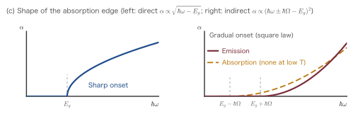
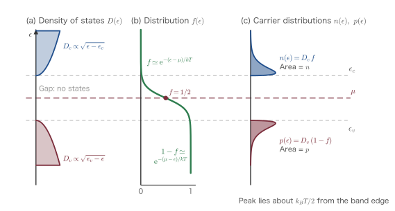
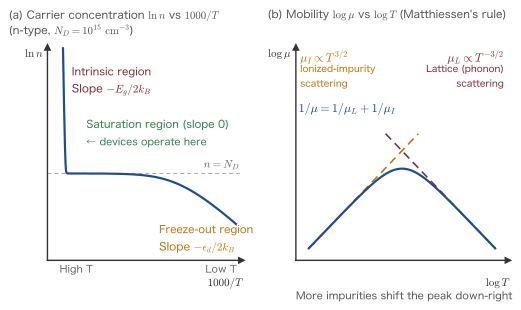

Chapter 17Semiconductors
In Chapter 16 we saw that the periodic potential splits the electron energies into bands and opens gaps between them. We then arrived at the distinction that a crystal with completely filled bands or empty bands is an insulator, whereas one with a partially filled band is a metal. This chapter is the continuation. What happens when the gap between a completely filled band and an empty band is “just a little” small?—this is the physics of semiconductors.
How small is “just a little”? The answer is $E_g \sim 1\,\mathrm{eV}$, about 40 times the room-temperature thermal energy $k_BT = 0.026\,\mathrm{eV}$. Being 40 times larger, it hardly seems that thermal excitation could occur, but the Boltzmann factor $\ee^{-E_g/2k_BT}$ is about $5\times10^{-10}$, and when this multiplies the effective density of states of the conduction and valence bands, $\sqrt{N_cN_v}\sim2\times10^{19}\,\mathrm{cm^{-3}}$ (calculated in Section 17.5), $10^{10}\,\mathrm{cm^{-3}}$ electrons remain. This fact that “a small number remain” is what makes semiconductors such exceptional materials. In a metal the number of carriers hardly changes with temperature, but in a semiconductor the number of carriers can be shifted by many orders of magnitude by temperature, by impurities, by light, or by an electric field. Transistors, solar cells, and LEDs all follow from this one point.
The technical core of this chapter consists of three items. The first is the semiclassical equation of motion $\hbar\dot\kk = \FF$. Electrons in a crystal are not free electrons, so why can “force equals the time rate of change of momentum” be used as it stands? Kittel gives this equation almost out of the blue, but in this chapter we derive it line by line from the wave-packet picture. The second is the effective mass. We derive this curious theorem, that the band curvature becomes the mass, mechanically from $\hbar\dot\kk=\FF$, and see that it is a tensor and that in Si $m^*$ differs by as much as a factor of five depending on direction, from $0.19m$ to $0.92m$. The third is the hole. Why does the vacancy left by the removal of one electron behave as a particle with positive charge $+e$ and positive mass? We derive the correspondence of signs one by one, from the fact that the current of a filled band is zero. Here the puzzle we left in Chapter 15—why the Hall coefficients of Be and Zn are positive—is solved.
On that basis, we derive completely, from the density of states and the Fermi–Dirac distribution, the central formula of semiconductor physics, the law of mass action $np = n_i^2$. Using just one integral, $\int_0^\infty\sqrt{x}\,\ee^{-x}\dd x = \sqrt\pi/2$, we can calculate the absolute value of $n_i$. We actually punch the numbers into a calculator for Si, and carry on until the figure $n_i \sim 10^{10}\,\mathrm{cm^{-3}}$ comes out. Finally, we treat donors and acceptors as a reworking of the hydrogen atom, and explain why the binding energy becomes $20\,\mathrm{meV}$ rather than $13.6\,\mathrm{eV}$, and why the Bohr radius becomes $30\,\mathrm{Å}$ rather than $0.5\,\mathrm{Å}$, using just two replacements—$m \to m^*$ and $e^2 \to e^2/\epsilon$.
- That a photon carries almost no momentum (confirmed numerically), and the distinction between direct and indirect transitions that follows from it
- Derive the shape of the absorption edge, $\alpha \propto (\hbar\omega-E_g)^{1/2}$ (direct) and $\alpha\propto(\hbar\omega\pm\hbar\Omega-E_g)^2$ (indirect), from the joint density of states
- Derivation of the semiclassical equation of motion $\hbar\dot\kk = \FF$ (from the work done on a wave packet), and why $\hbar\kk$ is the crystal momentum and not the true momentum
- The effective-mass tensor $(1/m^*)_{ij} = \hbar^{-2}\partial^2\epsilon/\partial k_i\partial k_j$, the six valleys of Si, and the difference between the conductivity effective mass and the density-of-states effective mass
- Complete derivation of the five sign rules for the hole, $\kk_h=-\kk_e$, $\epsilon_h=-\epsilon_e$, $\vv_h=\vv_e$, $q_h=+e$, $m_h=-m_e$
- Derivation of the intrinsic carrier concentrations $n$, $p$ and the law of mass action $np=n_i^2$, and the position of the chemical potential of an intrinsic semiconductor
- The hydrogen-like model of donors and acceptors: $\epsilon_d = 13.6\,\mathrm{eV}\times(m^*/m)/\epsilon^2$, $a_d = a_0\,\epsilon\,(m/m^*)$
- Solve the statistics of doped semiconductors from the charge neutrality condition, and understand the three regions: the freeze-out region, the saturation region, and the intrinsic region
- Mobility $\mu = e\tau/m^*$, lattice scattering $T^{-3/2}$ and ionized-impurity scattering $T^{3/2}$, and Matthiessen's rule
- How to determine experimentally the type, concentration, and mobility of carriers from Hall measurements and thermoelectric power
17.1 Band Gap and Optical Absorption — Direct and Indirect Transitions
17.1.1 What is a semiconductor?
Definition: semiconductor
A solid is called a semiconductor if, at absolute zero, its valence band is completely filled and its conduction band is completely empty (so that it is an insulator), and if its band gap $E_g$ is at most a few tens of times the thermal energy at room temperature, so that a non-negligible number of carriers are thermally excited at finite temperature.
As a rough estimate, $E_g \lesssim 3\,\mathrm{eV}$. A material with a larger $E_g$ is called an insulator, but the boundary is merely a convention, and there is no physical discontinuity. Diamond ($E_g=5.5\,\mathrm{eV}$) is sometimes called an insulator and sometimes a “wide-gap semiconductor.”
The part of this definition that says “an insulator at absolute zero” is the essential one. As we saw in Chapter 16, a filled band cannot carry current. Therefore a pure semiconductor is a perfect insulator at $T=0$. Here lies the difference from a metal: a metal has a Fermi surface even at $T=0$ and can supply carriers without any gap. Note, however, that in an ideal, perfectly periodic crystal with no scattering at all, the DC conductivity does not take a finite value but diverges. A real metal settles to a finite residual conductivity at $T=0$ because of scattering by impurities, defects, and sample boundaries.
Physical Meaning: Looking at the orders of magnitude of resistivity
Lining up the resistivity $\rho$ at room temperature shows how unusual the class of materials called semiconductors is.
| Material | $\rho$ ($\Omega\,\mathrm{cm}$) | Carrier concentration ($\mathrm{cm^{-3}}$) |
|---|---|---|
| Cu (metal) | $1.7\times10^{-6}$ | $8.5\times10^{22}$ |
| Heavily doped Si ($N_D=10^{20}$) | $\sim10^{-3}$ | $10^{20}$ |
| Doped Si ($N_D=10^{16}$) | $\sim0.5$ | $10^{16}$ |
| Intrinsic Si | $\sim2\times10^{5}$ | $1.0\times10^{10}$ |
| Fused silica (insulator) | $>10^{18}$ | — |
Between pure Si and heavily doped Si, the resistivity changes by eight orders of magnitude. Moreover, the impurity concentration is only $10^{20}/5\times10^{22} = 0.2\,\%$. Few other materials change their properties by eight orders of magnitude with 0.2% of impurities. All of semiconductor engineering rests on this single point.
| Material | Structure | Type | $E_g$ (300 K) / eV | $E_g$ (0 K) / eV | $\lambda_g$ (300 K) |
|---|---|---|---|---|---|
| $\mathrm{C}$ (diamond) | Diamond structure | Indirect | 5.47 | 5.48 | 227 nm |
| $\mathrm{Si}$ | Diamond structure | Indirect | 1.11 | 1.17 | 1117 nm |
| $\mathrm{Ge}$ | Diamond structure | Indirect | 0.67 | 0.74 | 1850 nm |
| $\mathrm{GaAs}$ | Zinc-blende type | Direct | 1.43 | 1.52 | 867 nm |
| $\mathrm{InP}$ | Zinc-blende type | Direct | 1.35 | 1.42 | 919 nm |
| $\mathrm{InAs}$ | Zinc-blende type | Direct | 0.36 | 0.42 | 3.4 µm |
| $\mathrm{InSb}$ | Zinc-blende type | Direct | 0.17 | 0.23 | 7.3 µm |
| $\mathrm{GaP}$ | Zinc-blende type | Indirect | 2.26 | 2.32 | 549 nm |
| $\mathrm{GaN}$ | Wurtzite type | Direct | 3.4 | 3.5 | 365 nm |
| $\mathrm{ZnO}$ | Wurtzite type | Direct | 3.37 | 3.44 | 368 nm |
| $\mathrm{CdS}$ | Wurtzite type | Direct | 2.42 | 2.58 | 512 nm |
| $4H\text{-}\mathrm{SiC}$ | Wurtzite-related | Indirect | 3.26 | 3.28 | 380 nm |
| $\mathrm{TiO_2}$ (rutile) | Rutile type | Indirect | 3.0 | — | 413 nm |
| $\mathrm{TiO_2}$ (anatase) | Anatase type | Indirect | 3.2 | — | 388 nm |
Supplement: The handy conversion $\lambda_g[\mathrm{nm}] = 1240/E_g[\mathrm{eV}]$
From $E = h\nu = hc/\lambda$ we have $\lambda = hc/E$. Writing $hc$ in terms of eV and nm,
$$ hc = (6.626\times10^{-34}\,\mathrm{J\,s})(2.998\times10^{8}\,\mathrm{m/s}) = 1.986\times10^{-25}\,\mathrm{J\,m} $$Dividing this by $1\,\mathrm{eV} = 1.602\times10^{-19}\,\mathrm{J}$ and multiplying by $1\,\mathrm{m}=10^{9}\,\mathrm{nm}$, we obtain
$$ hc = \frac{1.986\times10^{-25}}{1.602\times10^{-19}}\times10^{9}\ \mathrm{eV\cdot nm} = 1240\ \mathrm{eV\cdot nm} $$You will use this number $1240$ for the rest of your life, as long as you work on semiconductors and optical properties. Visible light spans $380$–$780\,\mathrm{nm}$, that is, $1.6$–$3.3\,\mathrm{eV}$. The fact that the $3.0\,\mathrm{eV}$ gap of $\mathrm{TiO_2}$ corresponds to $413\,\mathrm{nm}$, right at the short-wavelength (violet) edge of the visible range, is the reason why “$\mathrm{TiO_2}$ hardly absorbs visible light and looks white, yet acts as a photocatalyst under ultraviolet light” (the $3.2\,\mathrm{eV}=388\,\mathrm{nm}$ of anatase lies entirely on the ultraviolet side). Research on visible-light-responsive photocatalysts is nothing other than research on lowering this $3.0\,\mathrm{eV}$ to about $2.5\,\mathrm{eV}$ while preserving the redox potentials.
17.1.2 Photons carry almost no momentum
The most direct way to measure the band gap is optical absorption. By absorbing one photon, an electron is raised from the valence band to the conduction band. In this process, both energy and momentum must be conserved. First, let us confirm numerically that the momentum is the decisive constraint.
Derivation: The wavenumber of a photon is one thousandth of the size of the Brillouin zone
The wavenumber of a photon of energy $\hbar\omega$ is $q = \omega/c$. Multiplying both sides by $\hbar$ gives $\hbar q = \hbar\omega/c$, that is,
$$ q = \frac{\hbar\omega}{\hbar c} $$Here $\hbar c = 197.3\ \mathrm{eV\cdot nm}$ (this, too, is a number to remember; dividing $hc = 1240$ by $2\pi$ gives $197.3$). For a photon with $\hbar\omega = 1.0\,\mathrm{eV}$,
$$ q = \frac{1.0\ \mathrm{eV}}{197.3\ \mathrm{eV\cdot nm}} = 5.07\times10^{-3}\ \mathrm{nm^{-1}} $$On the other hand, the lattice constant of Si is $a = 0.543\,\mathrm{nm}$, so the representative size of the Brillouin zone is
$$ \frac{\pi}{a} = \frac{3.1416}{0.543\ \mathrm{nm}} = 5.79\ \mathrm{nm^{-1}} $$Taking the ratio,
∎ What this equation says is that a visible or near-infrared photon can shift $\kk$ by only one thousandth of the Brillouin zone. On a band diagram, an optical transition is therefore effectively a straight upward arrow. This is called a vertical transition or a direct transition.
Why? The photon momentum is small because $c$ is large
Even for “particles” with the same energy of $1\,\mathrm{eV}$, the momenta are completely different. For a photon, $E = pc$, so $p = E/c$. For an electron, on the other hand, $E = p^2/2m$, so $p = \sqrt{2mE}$. Inserting numbers,
$$ p_{\text{photon}} = \frac{1\ \mathrm{eV}}{c},\qquad p_{\text{electron}} = \sqrt{2\times(0.511\times10^6\ \mathrm{eV})\times1\ \mathrm{eV}}\,/c = \frac{1011\ \mathrm{eV}}{c} $$They differ by a factor of 1000. This ratio $1011 \simeq \sqrt{2m c^2 E}/E$ is exactly the $1/1000$ in Eq. \eqref{eq:17-photon-q}. The fact that $mc^2 = 0.511\,\mathrm{MeV}$ is enormously large compared with $1\,\mathrm{eV}$—that is, that the electron is nonrelativistic—is the fundamental reason why optical transitions are vertical.
Conversely, if we need a particle that can carry a large $\kk$, we can simply use a phonon. The energy of a phonon is small, at most $\hbar\Omega\sim 60\,\mathrm{meV}$, but its wavenumber can reach all the way to the edge of the Brillouin zone (Chapter 13). Photons carry energy, and phonons carry momentum. This division of roles is the key to indirect transitions.
17.1.3 The absorption edge for direct transitions — derived from the joint density of states
Derivation: $\alpha \propto (\hbar\omega - E_g)^{1/2}$
Suppose that the bottom of the conduction band and the top of the valence band are at the same $\kk$ (usually the $\Gamma$ point), and that both are parabolic in its neighborhood. Taking the origin of energy at the top of the valence band, we have
$$ \epsilon_c(\kk) = E_g + \frac{\hbar^2k^2}{2m_e^*}, \qquad \epsilon_v(\kk) = -\frac{\hbar^2k^2}{2m_h^*} $$(The valence band is concave downward, so $\epsilon_v$ decreases as $k$ increases.) Since a photon does not change $\kk$, only transitions between the upper and lower states at the same $\kk$ are allowed. Subtracting the two, the energy difference is
$$ \hbar\omega = \epsilon_c(\kk)-\epsilon_v(\kk) = E_g + \frac{\hbar^2k^2}{2m_e^*}+\frac{\hbar^2k^2}{2m_h^*} = E_g + \frac{\hbar^2k^2}{2\mu} $$Here we have defined the reduced mass $\mu$ by
$$ \frac{1}{\mu} \equiv \frac{1}{m_e^*}+\frac{1}{m_h^*} $$This is exactly the same form as the reduced mass in the two-body problem.
Now, the strength of the absorption is determined by “how many states of $\kk$ have an energy difference of exactly $\hbar\omega$.” This is called the joint density of states $J(\hbar\omega)$. It is defined as the number of allowed-transition $\kk$ states per unit volume and per unit energy interval.
Step 1: Number of states in $\kk$ space. As in Chapter 14, under periodic boundary conditions the number of states contained in a volume $\dd^3k$ of $\kk$ space is $\dfrac{2}{(2\pi)^3}\dd^3k$ per unit volume (the factor 2 is the spin). Taking a spherical shell, $\dd^3k = 4\pi k^2\dd k$, so
$$ \dd N = \frac{2}{(2\pi)^3}\,4\pi k^2\,\dd k = \frac{k^2}{\pi^2}\,\dd k $$Step 2: Converting $\dd k$ into $\dd(\hbar\omega)$. Differentiating $\hbar\omega = E_g + \hbar^2k^2/2\mu$ with respect to $k$ gives
$$ \frac{\dd(\hbar\omega)}{\dd k} = \frac{\hbar^2 k}{\mu} \qquad\Longrightarrow\qquad \frac{\dd k}{\dd(\hbar\omega)} = \frac{\mu}{\hbar^2k} $$This is the Jacobian of the change of variables. Therefore
$$ J(\hbar\omega) = \frac{\dd N}{\dd(\hbar\omega)} = \frac{k^2}{\pi^2}\cdot\frac{\mu}{\hbar^2 k} = \frac{\mu\,k}{\pi^2\hbar^2} $$Step 3: Writing $k$ in terms of $\hbar\omega$. Solving $\hbar\omega - E_g = \hbar^2k^2/2\mu$ for $k$ gives
$$ k = \frac{\sqrt{2\mu(\hbar\omega-E_g)}}{\hbar} $$Substituting this,
(We used $\mu\sqrt{2\mu} = 2^{1/2}\mu^{3/2} = (2\mu)^{3/2}/2$.)
Step 4: To the absorption coefficient. By Fermi's golden rule, the transition probability per unit time is $\dfrac{2\pi}{\hbar}\abs{M}^2 J(\hbar\omega)$. The absorption coefficient $\alpha$ is “the fraction of the light intensity lost per unit length,” and it equals the transition rate divided by the incident photon flux. Hence, if the matrix element $M$ is nearly constant near the absorption edge,
∎ For $\hbar\omega < E_g$ we have $J=0$, that is, $\alpha = 0$ (in reality there is a tail, but that is due to the excitons and impurity levels discussed later).
Physical Meaning: What this equation is saying
Eq. \eqref{eq:17-alpha-direct} says that “if we square the absorption coefficient and plot it against the photon energy, we obtain a straight line, and the intercept of that line extrapolated to the horizontal axis is $E_g$.” This is exactly how experimenters determine the gap. More precisely, one plots $(\alpha\hbar\omega)^2$ against $\hbar\omega$. This is called a Tauc plot.
For indirect transitions, as we will see later, $\alpha\propto(\hbar\omega-E_g)^2$, so plotting $(\alpha\hbar\omega)^{1/2}$ against $\hbar\omega$ gives a straight line. By checking for which exponent the plot becomes a straight line, one can tell whether the gap is direct or indirect. When we measure the diffuse reflection spectrum of $\mathrm{TiO_2}$ in the laboratory to obtain its gap, we use the $(\alpha h\nu)^{1/2}$ plot because $\mathrm{TiO_2}$ is an indirect-gap semiconductor.
17.1.4 Indirect transitions — phonons carry the momentum
In Si and Ge, the top of the valence band is at the $\Gamma$ point, but the bottom of the conduction band is located away from $\Gamma$ (in Si it is on the $\Delta$ line at $k_0 \simeq 0.85\times(2\pi/a)[100]$, and in Ge it is at the $L$ point). Therefore a photon alone cannot cause a transition from the top to the bottom. This is because, while $\kk$ can be shifted by only $10^{-3}$, it must move by as much as $0.85\times(2\pi/a)$.
Derivation: Conservation laws for indirect transitions and the role of the phonon
For an electron to move from $\kk_v \simeq 0$ in the valence band to $\kk_c = \kk_0$ in the conduction band, the large wavenumber $\kk_0$ must be supplied from somewhere. The phonon does this. A single phonon may be absorbed or emitted.
Conservation of momentum (crystal momentum):
$$ \kk_v + \qq_{\text{photon}} \pm \qq_{\text{phonon}} = \kk_c + \GG $$Since $\qq_{\text{photon}}\simeq0$, we have $\qq_{\text{phonon}} = \pm(\kk_c-\kk_v) = \pm\kk_0$. In the double sign above, $+$ is phonon absorption and $-$ is phonon emission. $\GG$ is a reciprocal lattice vector, which leaves open the possibility of an Umklapp process (Chapters 11 and 14).
Conservation of energy: Let $\hbar\Omega$ be the phonon energy. Then
$$ \hbar\omega \pm \hbar\Omega = \epsilon_c(\kk_c) - \epsilon_v(\kk_v) $$Therefore the minimum photon energy at which the transition can occur (the absorption edge) is, using the minimum $E_g$ of $\epsilon_c-\epsilon_v$,
∎ That is, two absorption edges appear: a weak onset at $E_g-\hbar\Omega$ and a strong onset from $E_g+\hbar\Omega$.
Why does the phonon-absorption branch disappear at low temperatures?
To absorb a phonon, a phonon must be present in the first place. By the Planck distribution derived in Chapter 14,
$$ \bar n(\Omega) = \frac{1}{\ee^{\hbar\Omega/k_BT}-1} $$the intensity of the phonon-absorption process is proportional to $\bar n$, and that of the phonon-emission process is proportional to $\bar n + 1$ (the $+1$ of spontaneous emission matters here). At low temperatures where $k_BT \ll \hbar\Omega$, we have $\bar n \to \ee^{-\hbar\Omega/k_BT}\to0$, so at low temperatures the branch at $E_g-\hbar\Omega$ disappears and only the branch at $E_g+\hbar\Omega$ remains.
The main phonons involved in indirect transitions in Si are $\hbar\Omega_{\mathrm{TA}} = 18.4\,\mathrm{meV}$ and $\hbar\Omega_{\mathrm{TO}} = 57.6\,\mathrm{meV}$. The temperature corresponding to $18.4\,\mathrm{meV}$ is $\hbar\Omega/k_B = 18.4/0.08617 = 214\,\mathrm{K}$, so at liquid-nitrogen temperature (77 K) we already have only $\bar n = 1/(\ee^{2.78}-1) = 0.067$. In fact, step-like structures appear in low-temperature absorption spectra, and from them one can read off the phonon energies of Si. Information about phonons emerges from an optical absorption spectrum—a beautiful phenomenon unique to indirect-transition semiconductors.
Derivation: For indirect transitions, $\alpha \propto (\hbar\omega\pm\hbar\Omega-E_g)^2$
For direct transitions, once the photon energy is fixed, the $\kk$ at which the transition occurs is determined uniquely (because conservation of $\kk$ is strictly enforced). For indirect transitions this is not so. Since the phonon can bring any wavenumber it likes, any state of the valence band may be combined with any state of the conduction band. The only constraint is conservation of energy.
So let $\epsilon_h$ be the energy of the hole on the valence-band side and $\epsilon_e$ the energy of the electron on the conduction-band side (each measured from the edge of its band), and define the total excess energy as
$$ \Delta \equiv \hbar\omega \pm \hbar\Omega - E_g = \epsilon_e + \epsilon_h $$The total number of transitions is the product of the number $D_c(\epsilon_e)$ of conduction-band states with energy $\epsilon_e$ and the number $D_v(\Delta-\epsilon_e)$ of valence-band states with energy $\epsilon_h = \Delta-\epsilon_e$, summed over all possible $\epsilon_e$:
$$ J_{\text{indirect}}(\Delta) \propto \int_0^{\Delta} D_c(\epsilon_e)\,D_v(\Delta-\epsilon_e)\,\dd\epsilon_e $$For three-dimensional parabolic bands, $D(\epsilon)\propto\sqrt\epsilon$, so
$$ J_{\text{indirect}}(\Delta) \propto \int_0^\Delta \sqrt{\epsilon}\,\sqrt{\Delta-\epsilon}\;\dd\epsilon $$We carry out this integral. With the substitution $\epsilon = \Delta\sin^2\theta$, we have $\dd\epsilon = 2\Delta\sin\theta\cos\theta\,\dd\theta$, $\Delta-\epsilon = \Delta\cos^2\theta$, and the range of integration is $\theta: 0\to\pi/2$. Therefore
$$ \int_0^\Delta\sqrt{\epsilon(\Delta-\epsilon)}\,\dd\epsilon = \int_0^{\pi/2}\bigl(\Delta\sin\theta\cos\theta\bigr)\bigl(2\Delta\sin\theta\cos\theta\bigr)\dd\theta = 2\Delta^2\int_0^{\pi/2}\sin^2\theta\cos^2\theta\,\dd\theta $$Using $\sin\theta\cos\theta = \frac12\sin2\theta$ gives $\sin^2\theta\cos^2\theta = \frac14\sin^22\theta$, and since $\int_0^{\pi/2}\sin^22\theta\,\dd\theta = \pi/4$,
$$ = 2\Delta^2\cdot\frac14\cdot\frac\pi4 = \frac{\pi}{8}\Delta^2 $$That is,
∎ Compared with the power $1/2$ for direct transitions, the exponent here is 2. The exponents differ by a factor of 4, so the onset near the absorption edge is far more gradual for indirect transitions.
Caution: The real reason the exponents differ is “a single $\kk$ or a pair of $\kk$ values”
Do not remember the difference between $1/2$ and $2$ as “indirect transitions are somehow weaker.” The reason is clear.
- Direct transition: Once $\hbar\omega$ is fixed, the $\kk$ at which the transition occurs is confined to the spherical surface $\abs{\kk}=k(\omega)$. What we count is the density of states for a single $\kk$, hence $\sqrt{\ }$.
- Indirect transition: Even when $\hbar\omega$ is fixed, the partition between $\epsilon_e$ and $\epsilon_h$ is free. What we count is pairs of $\kk$ values, and since we integrate $\sqrt{\ }\times\sqrt{\ }$, the result is $\Delta^2$.
In addition, an indirect transition is a second-order perturbation process mediated by a phonon (passing through an intermediate state), so the matrix element itself is also two to three orders of magnitude smaller than for a direct transition. These two effects combine to make the absorption coefficient of Si overwhelmingly smaller than that of GaAs.
Example 17.1: Why are Si solar cells thick and GaAs solar cells thin?
At $\hbar\omega = 1.5\,\mathrm{eV}$, the absorption coefficient is $\alpha\simeq 1\times10^{3}\,\mathrm{cm^{-1}}$ for Si and $\alpha\simeq 1\times10^{4}\,\mathrm{cm^{-1}}$ for GaAs. Estimate the thickness required for the light to be almost completely absorbed.
Solution. By the Beer–Lambert law $I(x) = I_0\ee^{-\alpha x}$, the distance over which the light decreases to $1/\ee$ (the penetration depth) is $1/\alpha$. To absorb the light almost completely, several times this distance is needed.
$$ \text{Si}: \ \frac{1}{\alpha} = \frac{1}{10^{3}\,\mathrm{cm^{-1}}} = 10\,\mu\mathrm{m} \quad\Longrightarrow\quad \text{in practice } 100\text{–}200\,\mu\mathrm{m} $$ $$ \text{GaAs}: \ \frac{1}{\alpha} = \frac{1}{10^{4}\,\mathrm{cm^{-1}}} = 1\,\mu\mathrm{m} \quad\Longrightarrow\quad \text{in practice } 2\text{–}3\,\mu\mathrm{m} $$∎ The difference is nearly a factor of 100. The reason the wafers of commercial crystalline-Si solar cells are as thick as about $150\,\mu\mathrm{m}$ is none other than that Si is an indirect-gap semiconductor. On the other hand, GaAs, $\mathrm{CdTe}$, and the perovskite $\mathrm{CH_3NH_3PbI_3}$ all have direct gaps, so a thin film a few $\mu\mathrm{m}$ thick suffices. Here lies the physical basis for the term “thin-film solar cell.”
For the same reason, Si cannot serve as a light-emitting device. Light emission is the reverse process of absorption, so with an indirect gap the help of a phonon is required, and the probability drops by orders of magnitude accordingly. The electrons and holes undergo nonradiative recombination before they can emit light. This is why GaN is used for blue LEDs and $\mathrm{GaAs_{1-x}P_x}$ and AlGaInP for red LEDs, while Si is not. The work on GaN by Shuji Nakamura et al. was epoch-making because it made it possible to actually grow crystals satisfying the condition “direct gap and wide gap.”

Supplement: The sharp line just below the absorption edge — the exciton
Looking closely at a measured absorption spectrum, one sometimes finds a sharp peak where $\hbar\omega$ is slightly smaller than $E_g$. This is the exciton. The electron promoted to the conduction band and the hole left in the valence band form a bound state through the Coulomb attraction, so absorption occurs at an energy lower than $E_g$ by the binding energy.
The binding energy is given by exactly the same form as the hydrogen-like model treated in Section 17.6,
$$ E_{\text{ex}} = 13.6\,\mathrm{eV}\times\frac{\mu/m}{\epsilon^2} $$where $\mu$ is the reduced mass of the electron and hole. For GaAs, $\mu = 0.058m$ and $\epsilon = 12.9$, so $E_{\text{ex}} = 13.6\times0.058/166 = 4.7\,\mathrm{meV}$. This is much smaller than $k_BT=26\,\mathrm{meV}$, so at room temperature the exciton is broken up by thermal energy and cannot be seen. At low temperature ($4\,\mathrm{K}$), a sharp exciton peak can be observed. Conversely, in $\mathrm{ZnO}$, $E_{\text{ex}} = 60\,\mathrm{meV}$ is large, and excitons survive even at room temperature. This is why $\mathrm{ZnO}$ has long been studied as a candidate for ultraviolet light-emitting devices.
17.2 Derivation of the Semiclassical Equation of Motion $\hbar\dot\kk = \FF$
From here on we come to the theoretical heart of this chapter. How does an electron in a crystal move when an electric field is applied? Naively, the electron feels the Coulomb force $-e\EE$ and, at the same time, an enormous force from the periodic potential of the lattice, so the problem looks hopelessly complicated. In fact, however, a surprisingly simple equation holds:
The right-hand side is only the force applied from outside. The force from the lattice does not appear at all. Kittel disposes of this equation in a few lines, but below we will unpack every one of those lines.
17.2.1 First, construct a wave packet
Definition: A wave packet built from Bloch states
As we saw in Chapter 11, the eigenstates in a periodic potential are the Bloch functions
$$ \psi_{n\kk}(\rr) = u_{n\kk}(\rr)\,\ee^{\mathrm{i}\kk\cdot\rr}, \qquad u_{n\kk}(\rr+\TT) = u_{n\kk}(\rr) $$These extend over the whole crystal and cannot tell us “where the particle is.” We therefore superpose Bloch states in a narrow range $\Delta k$ around $\kk_0$ to construct a spatially localized wave packet:
$$ \Psi(\rr,t) = \sum_{\kk \simeq \kk_0} g(\kk)\,\psi_{n\kk}(\rr)\,\ee^{-\mathrm{i}\epsilon_n(\kk)t/\hbar} $$By the uncertainty relation, the spatial extent of the wave packet is $\Delta x \sim 1/\Delta k$.
Why? The conditions under which the semiclassical approximation is justified
To regard a wave packet as a “particle,” the following two conditions must hold simultaneously.
- $\Delta k$ is small enough for $\kk$ to be meaningful: $\Delta k \ll \pi/a$. Since we want to use the band structure $\epsilon_n(\kk)$, the wave packet must fit within a narrow region of the Brillouin zone.
- $\Delta x$ is small enough for the position to be meaningful: $\Delta x$ is smaller than the length scale $L$ over which the external field varies.
Combining the two gives $a \ll \Delta x \ll L$, that is, the wave packet is much larger than the lattice constant and much smaller than the scale over which the external field varies. If $a = 5\,\text{Å}$ and the scale of the external field is $L = 1\,\mu\mathrm{m}$, it suffices to take $\Delta x \sim 100\,\text{Å}$ or so. This is entirely possible. That is why the semiclassical approximation is “usable.”
The approximation breaks down when the external field is very strong and $L$ becomes comparable to the lattice constant (tunneling, Zener breakdown), or when the gap is small and interband transitions occur. In such cases we must return to quantum mechanics.
17.2.2 Group velocity
Derivation: The velocity of a wave packet is $\vv_g = \hbar^{-1}\nabla_\kk\epsilon$
By the general theory of waves, the speed at which the center of a wave packet moves is given by the group velocity. In one dimension, it is
$$ v_g = \frac{\dd\omega}{\dd k} $$(we used the same equation for phonons in Chapter 13). For an electron, $\omega$ and $\epsilon$ are related by the de Broglie relation $\epsilon = \hbar\omega$, so substituting $\omega = \epsilon/\hbar$ gives
$$ v_g = \frac{\dd}{\dd k}\left(\frac{\epsilon}{\hbar}\right) = \frac{1}{\hbar}\frac{\dd\epsilon}{\dd k} $$Extending to three dimensions, the derivative with respect to $k$ becomes a gradient:
∎
What does this equation say? It says that “the velocity of an electron is the slope of the band.” Where the band is flat ($\nabla_\kk\epsilon = 0$), the electron is at rest, and where the slope is steep, it moves fast. At the bottom and top of a band, and at the Brillouin-zone boundary (where $\nabla_\kk\epsilon=0$ often holds by symmetry), the velocity of the electron is zero. This is perfectly consistent with the picture we saw in Chapter 16 that “at the zone boundary the states are standing waves rather than traveling waves.”
Example 17.2: Checking with free electrons
Apply Eq. \eqref{eq:17-groupvel} to free electrons, $\epsilon = \hbar^2k^2/2m$.
Solution.
$$ \vv_g = \frac{1}{\hbar}\nabla_\kk\frac{\hbar^2k^2}{2m} = \frac{1}{\hbar}\cdot\frac{\hbar^2}{2m}\cdot 2\kk = \frac{\hbar\kk}{m} = \frac{\pp}{m} $$∎ This agrees with $\vv = \pp/m$ of classical mechanics. Equation \eqref{eq:17-groupvel} reproduces the correct answer for free electrons, so it is a sound generalization.
17.2.3 Deriving $\hbar\dot\kk = \FF$
Derivation: The semiclassical equation of motion (the most important derivation in this chapter)
Place an electron (charge $-e$, $e>0$) in an electric field $\EE$. We compute the work done by the electric field on the electron during a time $\delta t$ in two ways and equate the results. This is the overall strategy.
[First calculation] Mechanically: work = force × distance
The force acting on the electron is $\FF = -e\EE$. During the time $\delta t$ the electron advances by $\delta\rr = \vv_g\,\delta t$. Therefore the work done on the electron by the electric field, that is, the increase in the energy of the electron, is
$$ \delta\epsilon = \FF\cdot\delta\rr = \FF\cdot\vv_g\,\delta t = -e\,\EE\cdot\vv_g\,\delta t \tag{A} $$[Second calculation] In terms of band theory: the energy is a function of $\kk$
The energy of the electron is $\epsilon = \epsilon_n(\kk)$. If $\kk$ changes by $\delta\kk$, the total differential gives
$$ \delta\epsilon = \nabla_\kk\epsilon\cdot\delta\kk \tag{B} $$Here, reading Eq. \eqref{eq:17-groupvel} backward and substituting $\nabla_\kk\epsilon = \hbar\vv_g$, we obtain
$$ \delta\epsilon = \hbar\,\vv_g\cdot\delta\kk \tag{B$'$} $$[Equating] Since we have written the same $\delta\epsilon$ in two ways, (A) and (B$'$) are equal:
$$ \hbar\,\vv_g\cdot\delta\kk = \FF\cdot\vv_g\,\delta t $$Dividing both sides by $\delta t$ gives
$$ \vv_g\cdot\left(\hbar\frac{\delta\kk}{\delta t}\right) = \vv_g\cdot\FF $$that is,
$$ \vv_g\cdot\left(\hbar\dot\kk - \FF\right) = 0 $$This equation must hold for every wave packet (that is, for every direction of $\vv_g$). Since the direction of the vector $\vv_g$ can be changed freely by the choice of $\kk_0$, the quantity in parentheses must vanish:
∎ When a magnetic field is present, we have included the Lorentz force. The magnetic term does no work, so it does not follow directly from the argument above, but the same form is derived from a more careful wave-packet theory (Ashcroft–Mermin, Chapter 12).
Caution: An honest account of the “weak point” of this derivation
In the argument above, what we obtain by equating (A) and (B$'$) is, strictly speaking, only an equality for the component parallel to $\vv_g$. For the component perpendicular to $\vv_g$, this argument says nothing.
We filled the gap with the argument that “the direction of $\vv_g$ can be changed freely,” but changing the direction of $\vv_g$ also changes $\kk$, so we are then looking at a different place in the band structure; the argument is therefore not completely rigorous.
A proper derivation is obtained by treating the motion of the wave packet in the Lagrangian formalism (or in the modern formulation that includes the Berry phase). There the equations take the form
$$ \dot\rr = \frac{1}{\hbar}\nabla_\kk\epsilon - \dot\kk\times\bm\Omega_n(\kk), \qquad \hbar\dot\kk = -e\EE - e\,\dot\rr\times\BB $$and an extra term $\bm\Omega_n(\kk)$ (the Berry curvature) even appears. This is the starting point of the theories of the anomalous Hall effect and of topological insulators. Within the scope of this book we may regard $\bm\Omega_n = 0$, and Eq. \eqref{eq:17-eom} is sufficient. Nevertheless, we want you to know that “Kittel’s derivation is a simplified version.”
Physical Meaning: $\hbar\kk$ is the crystal momentum, not the momentum
Equation \eqref{eq:17-eom} looks just like $\dd\pp/\dd t = \FF$, but $\hbar\kk$ is not the true momentum of the electron. As we saw in Chapter 11, $\kk$ is a label attached to an irreducible representation of the translation group, and a Bloch state is not an eigenstate of the momentum operator $\hat\pp = -\mathrm{i}\hbar\nabla$. Indeed,
$$ \hat\pp\,\psi_{n\kk} = -\mathrm{i}\hbar\nabla\left(u_{n\kk}\ee^{\mathrm{i}\kk\cdot\rr}\right) = \hbar\kk\,\psi_{n\kk} + \ee^{\mathrm{i}\kk\cdot\rr}\left(-\mathrm{i}\hbar\nabla u_{n\kk}\right) $$and since the second term remains, it is not an eigenstate. We call $\hbar\kk$ the crystal momentum to distinguish it.
Then why does the force from the lattice not appear in Eq. \eqref{eq:17-eom}? The answer is that the effect of the force from the lattice is already entirely contained in the form of $\epsilon_n(\kk)$. By the time we have computed the band structure, the effect of the periodic potential has been used up. Equation \eqref{eq:17-eom} needs to deal only with “the additional external forces beyond those that produced the band structure.” This is the beauty of the semiclassical approximation.
That the lattice hands momentum back and forth shows up clearly in the Umklapp process ($\kk$ jumps by $\GG$). The true momentum is conserved, but the difference $\hbar\GG$ is taken up by the crystal as a whole.
Example 17.3: Bloch oscillation — why is it not observed?
Apply a constant electric field $E$ to a one-dimensional crystal (lattice constant $a$). Assuming there is no scattering at all, describe the motion of the electron. For $E = 10^4\,\mathrm{V/m}$ and $a = 5\,\text{Å}$, find the time to go once around the Brillouin zone.
Solution. Equation \eqref{eq:17-eom} reads $\hbar\dot k = -eE$ (a constant), so it can be integrated immediately:
$$ k(t) = k(0) - \frac{eE}{\hbar}t $$$k$ keeps moving at a constant speed. However, $k$ is defined within the Brillouin zone, and when $k$ reaches $\pi/a$ it returns to $-\pi/a$ (since it is the same state). Therefore $k$ circulates around the Brillouin zone with period $T_B$, and the velocity $v_g = \hbar^{-1}\dd\epsilon/\dd k$ also changes sign periodically. In other words, even though a DC electric field is applied, the electron oscillates. This is called Bloch oscillation.
The period is the time required for $k$ to advance by $2\pi/a$:
$$ T_B = \frac{2\pi/a}{eE/\hbar} = \frac{2\pi\hbar}{eEa} = \frac{h}{eEa} $$Substituting numbers, with $h = 6.626\times10^{-34}\,\mathrm{J\,s}$, $e=1.602\times10^{-19}\,\mathrm{C}$, $E=10^4\,\mathrm{V/m}$, and $a=5\times10^{-10}\,\mathrm{m}$:
$$ T_B = \frac{6.626\times10^{-34}}{(1.602\times10^{-19})(10^{4})(5\times10^{-10})} = \frac{6.626\times10^{-34}}{8.01\times10^{-25}} = 8.3\times10^{-10}\,\mathrm{s} $$That is, $0.83\,\mathrm{ns}$, which corresponds to a frequency of $1.2\,\mathrm{GHz}$.
∎ However, the scattering time in a real crystal is $\tau\sim10^{-13}\,\mathrm{s}$ (calculated in Section 17.8). Since $T_B/\tau \simeq 8300$, the electron is scattered before it has traveled even about one 8000th of the way around the Brillouin zone. That is why Bloch oscillation cannot be observed in bulk crystals. To observe it, we need to shorten $T_B$; since $T_B \propto 1/a$, we should make $a$ larger. It was first observed in 1992 in a semiconductor superlattice (in which a period of $a\sim100\,\text{Å}$ is created artificially). The idea of “making $a$ larger” is what made the experiment possible.
17.3 Effective Mass — Band Curvature Becomes Mass
17.3.1 Definition in one dimension
Derivation: Definition of $m^*$
We want to construct the form of Newton's second law, $\FF = m\bm a$. To this end, we differentiate the group velocity with respect to time to obtain the acceleration. We write this in one dimension.
Differentiate both sides of $v_g = \hbar^{-1}\dd\epsilon/\dd k$ with respect to $t$. Since $\epsilon$ depends on $t$ only through $k$, the chain rule gives
$$ \frac{\dd v_g}{\dd t} = \frac{\dd}{\dd t}\left(\frac{1}{\hbar}\frac{\dd\epsilon}{\dd k}\right) = \frac{1}{\hbar}\frac{\dd}{\dd k}\left(\frac{\dd \epsilon}{\dd k}\right)\frac{\dd k}{\dd t} = \frac{1}{\hbar}\frac{\dd^2\epsilon}{\dd k^2}\cdot\frac{\dd k}{\dd t} $$Into this we substitute Eq. \eqref{eq:17-eom}, that is, $\dd k/\dd t = F/\hbar$:
$$ \frac{\dd v_g}{\dd t} = \frac{1}{\hbar}\frac{\dd^2\epsilon}{\dd k^2}\cdot\frac{F}{\hbar} = \frac{1}{\hbar^2}\frac{\dd^2\epsilon}{\dd k^2}\,F $$Comparing this with $\dd v_g/\dd t = F/m^*$, we obtain
∎ The effective mass is the inverse of the band curvature.
Physical Meaning: What does it mean for curvature to become mass?
Equation \eqref{eq:17-effmass-1d} says the following three things.
- A steep band (large curvature) $\Rightarrow$ small $m^*$ $\Rightarrow$ a light electron. The electron is accelerated strongly by the same force. This agrees with the chemical intuition that a wide bandwidth means a large overlap of atomic orbitals, which means that electrons move easily.
- A flat band (small curvature) $\Rightarrow$ large $m^*$ $\Rightarrow$ a heavy electron. In the heavy fermions of $f$-electron systems, $m^*$ can reach $1000m$.
- A band that is concave downward (negative curvature) $\Rightarrow$ $m^*<0$. The electron is accelerated in the direction opposite to the force. This looks strange, but it is precisely the origin of the hole (Section 17.4).
There is no need to be surprised by a “negative mass.” While the electric field tries to accelerate the electron, the lattice pushes the electron back by Bragg reflection. When the pushing-back effect wins, the net acceleration points opposite to the force. The quantity $m^*$ is not the “inertia of the electron” but an effective response coefficient that includes the interaction between the electron and the lattice.
Example 17.4: Effective mass of a one-dimensional tight-binding band
For the tight-binding band $\epsilon(k) = \epsilon_0 - 2t\cos ka$ derived in Chapter 18 ($t>0$, bandwidth $4t$), find the effective masses at the bottom of the band ($k=0$) and at the top ($k=\pi/a$).
Solution. We compute the second derivative.
$$ \frac{\dd\epsilon}{\dd k} = 2ta\sin ka, \qquad \frac{\dd^2\epsilon}{\dd k^2} = 2ta^2\cos ka $$Therefore
$$ m^*(k) = \frac{\hbar^2}{2ta^2\cos ka} $$Bottom of the band ($k=0$): since $\cos0 = 1$,
$$ m^*(0) = \frac{\hbar^2}{2ta^2} > 0 $$Top of the band ($k=\pi/a$): since $\cos\pi = -1$,
$$ m^*(\pi/a) = -\frac{\hbar^2}{2ta^2} < 0 $$∎ The effective mass is positive at the bottom and negative at the top. Moreover, at $k=\pi/2a$ we have $\cos = 0$ and $m^* = \infty$ (this is an inflection point, so the electron does not accelerate even when a force is applied).
Numbers. For $t = 1\,\mathrm{eV}$ and $a = 3\,\text{Å}$,
$$ m^*(0) = \frac{(1.055\times10^{-34})^2}{2\times(1.602\times10^{-19})\times(3\times10^{-10})^2} = \frac{1.113\times10^{-68}}{2.884\times10^{-38}} = 3.86\times10^{-31}\,\mathrm{kg} $$Dividing by the free-electron mass $m = 9.109\times10^{-31}\,\mathrm{kg}$ gives $m^*/m = 0.42$. In a relatively wide band with bandwidth $4t=4\,\mathrm{eV}$, the effective mass is less than half the free-electron mass. Conversely, for a narrow band with $t = 0.1\,\mathrm{eV}$, we get $m^*/m = 4.2$, which is heavy. We can read off the relation $m^*\propto 1/t$; that is, the effective mass is inversely proportional to the bandwidth (= the orbital overlap).
17.3.2 The effective mass is a tensor
Derivation: Effective-mass tensor
In three dimensions, the direction of the force and the direction of the acceleration do not necessarily coincide. We rewrite the same calculation as in Eq. \eqref{eq:17-effmass-1d} in terms of components. The $i$ component of the group velocity is $v_i = \hbar^{-1}\partial\epsilon/\partial k_i$. Differentiating this with respect to $t$, and noting that $\epsilon$ depends on all of $k_1,k_2,k_3$, the multivariable chain rule gives
$$ \frac{\dd v_i}{\dd t} = \frac{1}{\hbar}\sum_{j}\frac{\partial}{\partial k_j}\left(\frac{\partial\epsilon}{\partial k_i}\right)\frac{\dd k_j}{\dd t} = \frac{1}{\hbar}\sum_j \frac{\partial^2\epsilon}{\partial k_i\partial k_j}\,\frac{\dd k_j}{\dd t} $$Substituting $\hbar\,\dd k_j/\dd t = F_j$ here, we get
$$ \frac{\dd v_i}{\dd t} = \frac{1}{\hbar^2}\sum_j \frac{\partial^2\epsilon}{\partial k_i\partial k_j}\,F_j $$Comparing this with the form $\dd v_i/\dd t = \sum_j (1/m^*)_{ij}F_j$, we obtain
∎ The inverse of the effective mass is a $3\times3$ symmetric tensor (since the order of partial differentiation can be exchanged, $\partial^2\epsilon/\partial k_i\partial k_j = \partial^2\epsilon/\partial k_j\partial k_i$, and hence the tensor is symmetric).
Supplement: Symmetry determines the form of the tensor (connection with Chapters 4 and 11)
A symmetric tensor can be diagonalized by a suitable choice of principal axes. The orientation of these principal axes is determined by the symmetry of the crystal—this is Neumann's principle, which we learned in Chapter 4.
- The $\Gamma$ point of a cubic crystal (little co-group $O_h$ or $T_d$): since the $\Gamma$ point is totally symmetric, the inverse-mass tensor must be equivalent in all three directions. Therefore $(1/m^*)_{ij} = (1/m^*)\delta_{ij}$, and it becomes a scalar. The fact that the bottom of the conduction band of GaAs is isotropic is a consequence of this symmetry.
- A point on the $\Delta$ line (little co-group $C_{4v}$): only the directions around the fourfold axis are equivalent, so two independent components remain, the axial one $m_l$ (longitudinal) and the perpendicular one $m_t$ (transverse, twofold degenerate). The constant-energy surface is a spheroid. The conduction band of Si is of this kind.
- The $L$ point (little co-group $D_{3d}$, order 12): this is the symmetry around a threefold axis together with inversion. Again there are two components, $m_l$ and $m_t$. The conduction band of Ge is of this kind. In zinc-blende-type crystals (such as GaAs), which have no inversion center, inversion is lost and the little co-group becomes $C_{3v}$, but the number of independent components remains two.
The seemingly purely geometric question “is the constant-energy surface a sphere or a spheroid?” is completely determined by the language of the point groups of Chapter 4 and the groups of the wave vector of Chapter 11. The tools built in Part II are working directly here.
17.3.3 The conduction band of Si — six valleys
Physical Meaning: Why are there six valleys? — The star of $\kk$
The bottom of the conduction band of Si is not at $\Gamma$ but at $k_0 \simeq 0.85\times(2\pi/a)$ on the $\Delta$ line (the $\langle100\rangle$ direction from $\Gamma$ toward $X$). How many such “valleys” are there?
We can answer this in the language of Chapter 11. For a given $\kk_0$, the set of mutually distinct $\kk$ obtained by applying all the operations of the point group is called the star of $\kk$, and the number of its elements is given by
$$ (\text{size of the star}) = \frac{\abs{G_0}}{\abs{G_{\kk_0}}} = \frac{\text{order of the point group}}{\text{order of the little co-group}} $$The point group of Si is $O_h$ (order 48), and the little co-group of a point on the $\Delta$ line is $C_{4v}$ (order 8), so
$$ \frac{48}{8} = 6 $$There are six valleys, namely the six directions $[100],[\bar100],[010],[0\bar10],[001],[00\bar1]$.
Let us do the same calculation for Ge. The bottom of the conduction band of Ge is at the $L$ point (on the Brillouin-zone boundary in the $\langle111\rangle$ direction). The little co-group of the $L$ point is $D_{3d}$ (order 12), which contains inversion, so the size of the star is $48/12 = 4$. This agrees with the following way of counting. The $L$ point lies on the zone boundary, and $L$ and $-L$ are separated by a reciprocal lattice vector and are therefore identified. Hence the eight $L$ points in the $\langle111\rangle$ directions count only “by halves,” and are effectively equivalent to four complete valleys. By including inversion in the little co-group, this identification has already been taken into account. This way of counting is essential when counting the volume of the Fermi surface (Chapter 18).
Derivation: Density of states of an ellipsoidal valley and the “density-of-states effective mass”
The energy of a single valley of Si (for example, the one along the $[001]$ direction), measured from the valley bottom $\epsilon_c$, can be written as
$$ \epsilon = \frac{\hbar^2 k_1^2}{2m_t}+\frac{\hbar^2 k_2^2}{2m_t}+\frac{\hbar^2 k_3^2}{2m_l} $$(where $k_3$ is along the valley axis). The constant-energy surface is a spheroid. We want to find the density of states of this valley.
Step 1: Change variables to make it a sphere. Choose a suitable mass $m^\dagger$ and set
$$ k_1 = \sqrt{\frac{m_t}{m^\dagger}}\,\tilde k_1,\quad k_2 = \sqrt{\frac{m_t}{m^\dagger}}\,\tilde k_2,\quad k_3 = \sqrt{\frac{m_l}{m^\dagger}}\,\tilde k_3 $$Then
$$ \epsilon = \frac{\hbar^2}{2m^\dagger}\left(\tilde k_1^2+\tilde k_2^2+\tilde k_3^2\right) $$and the constant-energy surface is a sphere in $\tilde\kk$ space.
Step 2: Obtain the Jacobian. The volume element is
$$ \dd^3k = \dd k_1\dd k_2\dd k_3 = \sqrt{\frac{m_t}{m^\dagger}}\sqrt{\frac{m_t}{m^\dagger}}\sqrt{\frac{m_l}{m^\dagger}}\ \dd^3\tilde k = \frac{\sqrt{m_l m_t^2}}{(m^\dagger)^{3/2}}\,\dd^3\tilde k $$This is the key point of the calculation. The factor $\sqrt{m_lm_t^2}$ appears in $\dd^3k$. The geometric mean of the three masses is at work.
Step 3: Density of states. The number of states per unit volume is $\dfrac{2}{(2\pi)^3}\dd^3k$ (the factor 2 is the spin), so using the standard result for a sphere in $\tilde\kk$ space (the same form as for free electrons; Chapters 14 and 15), we obtain
$$ D_{1\text{valley}}(\epsilon) = \frac{\sqrt{m_lm_t^2}}{(m^\dagger)^{3/2}}\times\frac{1}{2\pi^2}\left(\frac{2m^\dagger}{\hbar^2}\right)^{3/2}\sqrt{\epsilon} = \frac{1}{2\pi^2}\left(\frac{2}{\hbar^2}\right)^{3/2}\left(m_lm_t^2\right)^{1/2}\sqrt{\epsilon} $$The $m^\dagger$ has cancelled out cleanly (of course, since $m^\dagger$ was a quantity we introduced arbitrarily for convenience).
Step 4: The case of $M_c$ valleys. Each valley is counted independently, so we multiply by $M_c$. We want to squeeze this into the same form as that of “a single isotropic band of effective mass $m_{de}$,”
$$ D(\epsilon) = \frac{1}{2\pi^2}\left(\frac{2m_{de}}{\hbar^2}\right)^{3/2}\sqrt\epsilon $$Equating the two gives $m_{de}^{3/2} = M_c(m_lm_t^2)^{1/2}$, that is,
∎ This is called the density-of-states effective mass.
Example 17.5: Calculating the density-of-states effective mass of Si
The conduction band of Si has $M_c = 6$, $m_l = 0.92m$, and $m_t = 0.19m$. Find $m_{de}$.
Solution. Substitute into Eq. \eqref{eq:17-mde}. First we compute the quantity inside the parentheses.
$$ m_l m_t^2 = 0.92\times(0.19)^2 = 0.92\times0.0361 = 0.03321\ (\text{the unit is }m^3) $$Take the cube root. Since $0.3215^3 = 0.03322$,
$$ \left(m_lm_t^2\right)^{1/3} = 0.3215\,m $$Next, $M_c^{2/3}$. We have $6^{2/3} = (6^2)^{1/3} = 36^{1/3}$, and since $3.30^3 = 35.94$, $36^{1/3} = 3.302$. Therefore
$$ m_{de} = 3.302\times0.3215\,m = 1.062\,m \simeq 1.06\,m $$∎ The literature value is $m_{de} = 1.08m$ (it varies slightly depending on whether the low-temperature or the room-temperature mass values are used). The agreement is good.
Here is the interesting part. The electrons in Si have $m_l=0.92m$ and $m_t=0.19m$, both lighter than the free-electron mass, yet the density-of-states effective mass is $1.06m$, which is heavier than the free electron. The reason is the factor $M_c^{2/3} = 3.30$. Because there are six valleys, the number of states that can be accommodated at the same energy is multiplied by six, and this looks equivalent to “a single heavy band.”
Let us also do it for Ge. With $M_c=4$, $m_l=1.59m$, and $m_t=0.082m$:
$$ m_lm_t^2 = 1.59\times0.006724 = 0.010691,\qquad (0.010691)^{1/3} = 0.2203 $$ $$ m_{de} = 4^{2/3}\times0.2203\,m = 2.520\times0.2203\,m = 0.555\,m $$The literature value is $0.56m$. This also agrees.
Caution: Do not confuse the three kinds of “effective mass”
At least three effective masses appear in semiconductor textbooks. They are used for different purposes, so they must not be mixed.
| Name | Definition | Where it is used | Value for Si |
|---|---|---|---|
| Principal-axis effective mass | $m_l$, $m_t$ (eigenvalues of the tensor) | Cyclotron resonance, stress effects | $0.92m$, $0.19m$ |
| Density-of-states effective mass $m_{de}$ | $M_c^{2/3}(m_lm_t^2)^{1/3}$ | Calculation of the carrier concentration $n$ and of $N_c$ | $1.08m$ |
| Conductivity effective mass $m_{ce}$ | $\dfrac{3}{m_{ce}} = \dfrac{1}{m_l}+\dfrac{2}{m_t}$ | Mobility $\mu = e\tau/m_{ce}$, conductivity | $0.26m$ |
The density of states involves the geometric mean of the masses ($\sqrt{m_lm_t^2}$, because it is a volume that “counts” the states), whereas the conductivity involves the arithmetic mean of the inverse masses ($\langle 1/m\rangle$, because the ease of acceleration is determined by the inverse mass and is averaged over the three directions). That the average is taken differently for a quantity that counts and a quantity that responds is a structure we often meet in physics.
Let us calculate the conductivity effective mass of Si:
$$ \frac{3}{m_{ce}} = \frac{1}{0.92m}+\frac{2}{0.19m} = \frac{1.087+10.526}{m} = \frac{11.613}{m} \quad\Longrightarrow\quad m_{ce} = \frac{3}{11.613}m = 0.258\,m $$Note that the lighter $m_t$ dominates. In conduction, the “direction in which the electron moves easily” is what matters.
Why? The smaller the gap, the smaller the effective mass
Looking at Table 17.4, we see a clear correlation between $E_g$ and $m_e^*$. This is not a coincidence.
In the two-band model ($\bm k\cdot\bm p$ perturbation theory), the effective mass of the conduction band is given by
$$ \frac{m}{m_e^*} = 1 + \frac{2P^2}{m\,E_g}, \qquad P = \bra{u_c}\hat p_x\ket{u_v}\ \text{(interband momentum matrix element)} $$Since $P$ is almost independent of the material ($2P^2/m \simeq 20\,\mathrm{eV}$), the smaller $E_g$ is, the larger the second term on the right-hand side becomes, and the smaller $m_e^*$ becomes.
Intuitively, this can be understood from the picture of Chapter 16. The gap arises because the valence band and the conduction band “repel” each other. A weak repulsion (small $E_g$) means that the two bands are close together and bend steeply, and a large curvature means a light mass. The size of the gap and the curvature of the band are two sides of the same physics.
| Material | $E_g$ / eV | $m_e^*/m$ | Value expected from $2P^2/m$ |
|---|---|---|---|
| $\mathrm{InSb}$ | 0.17 | 0.014 | 0.0085 |
| $\mathrm{InAs}$ | 0.36 | 0.023 | 0.018 |
| $\mathrm{InP}$ | 1.35 | 0.077 | 0.068 |
| $\mathrm{GaAs}$ | 1.43 | 0.067 | 0.072 |
| $\mathrm{GaN}$ | 3.4 | 0.20 | 0.17 |
(The right-hand column was calculated using the simplification, in the limit $E_g \ll 2P^2/m$, $m/m^* = 1+20\,\mathrm{eV}/E_g \simeq 20\,\mathrm{eV}/E_g$, that is, $m^*/m \simeq E_g/(20\,\mathrm{eV})$. It agrees to within about $\pm50\%$, which is excellent for such a crude model.)
This correlation has practical significance. The electrons in $\mathrm{InSb}$ are extremely light, with $m^*=0.014m$, so the mobility reaches the extraordinary value of $77000\,\mathrm{cm^2/Vs}$, and the material is used for infrared detectors and magnetic sensors. Conversely, oxides such as $\mathrm{TiO_2}$ have a large $m^*$ (and moreover form small polarons), and the mobility is only about $1\,\mathrm{cm^2/Vs}$.
17.4 Holes — Deriving the Signs One by One
Let us consider an almost filled valence band: a situation in which $10^{16}$ of the $10^{22}\,\mathrm{cm^{-3}}$ electrons are missing. It is impossible to follow all $10^{22}$ electrons, but fortunately we can treat the vacancy left behind as a single particle. Such a particle is called a hole.
The properties of the hole are not something to memorize but something to derive. Below, we derive all five relations from a single fact: "a filled band carries no current."
17.4.1 Starting point: a filled band carries neither current nor momentum
Derivation: The total current and the total wave vector of a completely filled band are zero
By time-reversal symmetry (and by spatial inversion symmetry if the crystal is inversion symmetric), the band structure satisfies
$$ \epsilon_n(-\kk) = \epsilon_n(\kk) $$Differentiating both sides with respect to $\kk$, the derivative of the left-hand side becomes $-\nabla_\kk\epsilon_n\big|_{-\kk}$ by the chain rule, so that
$$ -\left.\nabla_\kk\epsilon_n\right|_{-\kk} = \left.\nabla_\kk\epsilon_n\right|_{\kk} \qquad\Longrightarrow\qquad \vv(-\kk) = -\vv(\kk) $$The velocity is an odd function of $\kk$. Since the Brillouin zone is symmetric about the origin, $\kk$ and $-\kk$ always exist in pairs. Therefore, in the sum over all states of the band the two cancel each other:
∎ Since the current is $\jj = (-e)\sum\vv/V$, a completely filled band carries no current. This is the basis for the statement in Chapter 16 that "a filled band is an insulator."
Applying an electric field does not change the situation. By Eq. \eqref{eq:17-eom}, the $\kk$ of every electron is translated at the same rate $\dot\kk = -e\EE/\hbar$, but in a filled band the states to which the electrons move are always occupied as well (whatever goes beyond the Brillouin zone returns from the opposite side), so the distribution does not change at all.
17.4.2 Deriving the five properties of the hole
Derivation 1: $\kk_h = -\kk_e$ (sign of the wave vector)
From a filled band, remove just one electron of wave vector $\kk_e$. Using Eq. \eqref{eq:17-fullband}, the total wave vector of the remaining system is
$$ \kk_{\text{total}} = \underbrace{\sum_{\text{all }\kk}\kk}_{=\,0} - \kk_e = -\kk_e $$We interpret this "total wave vector of the remaining system" as the wave vector of a single particle called the hole. That is,
∎ The wave vector of the hole is the wave vector of the missing electron with its sign reversed.
We should be careful: this does not mean that "the hole is located there." The hole is a name given to the collective motion of $10^{22}$ electrons, and $\kk_h$ is the total wave vector carried by that collection.
Derivation 2: $q_h = +e$ and $\vv_h = \vv_e$ (charge and velocity)
We calculate the total current of the system from which one electron has been removed. Since the charge of an electron is $-e$,
$$ \jj = \frac{-e}{V}\sum_{\kk \ne \kk_e}\vv(\kk) = \frac{-e}{V}\left[\underbrace{\sum_{\text{all }\kk}\vv(\kk)}_{=\,0} - \vv(\kk_e)\right] = \frac{-e}{V}\bigl[-\vv(\kk_e)\bigr] = \frac{+e}{V}\,\vv(\kk_e) $$That is,
∎ This single line is the heart of the concept of the hole. The current of a "filled band lacking one electron" is exactly the same as the current of "one particle that has charge $+e$ and moves with the same velocity as the missing electron."
There are two points to note.
- The velocity is not reversed. Although $\kk_h = -\kk_e$, we have $\vv_h = +\vv_e$. This seems contradictory, but it is not. In Derivation 3 and Derivation 5 below, the signs of the energy and the mass are reversed at the same time, so when we compute $\vv_h = \hbar^{-1}\nabla_{\kk_h}\epsilon_h$ the two minus signs cancel and $\vv_h = \vv_e$. Indeed, $$ \vv_h = \frac{1}{\hbar}\frac{\partial\epsilon_h}{\partial\kk_h} = \frac{1}{\hbar}\frac{\partial(-\epsilon_e)}{\partial(-\kk_e)} = \frac{1}{\hbar}\frac{\partial\epsilon_e}{\partial\kk_e} = \vv_e \quad\checkmark $$ which confirms that all the sign rules are consistent with one another.
- The charge became $+e$ because the operation of "subtracting one term from $\sum\vv = 0$" flipped the overall sign. There is no positively charged particle inside the hole.
Derivation 3: $\epsilon_h(\kk_h) = -\epsilon_e(\kk_e)$ (sign of the energy)
Consider the total energy of the system. Let $E_0 = \sum_{\text{all}\kk}\epsilon_e(\kk)$ be the total energy of the filled band. The energy of the system from which the electron at $\kk_e$ has been removed is
$$ E = E_0 - \epsilon_e(\kk_e) $$If we regard this system as "vacuum (= the filled band, of energy $E_0$) plus one hole," the energy of the hole is
$$ \epsilon_h = E - E_0 = -\epsilon_e(\kk_e) $$Rewriting this as $\kk_e = -\kk_h$ by means of Eq. \eqref{eq:17-hole-k}, we obtain
(In the last equality we used $\epsilon_e(-\kk)=\epsilon_e(\kk)$.) ∎
What does this equation say? It says that "the energy landscape of the hole is the energy landscape of the electron turned upside down." The valence band is concave downward (the top is the maximum), so turning it upside down makes it concave upward. That is,
- For an electron, the top of the valence band is the energy maximum.
- For a hole, the top of the valence band is the energy minimum.
This is why "the hole floats up." On a band diagram, electrons fall down and holes float up, just like bubbles in water. A bubble is "a place where one portion of water is missing," yet it rises as if it were an object with negative mass.
Derivation 4: The equation of motion of the hole is $\hbar\dot\kk_h = +e(\EE+\vv_h\times\BB)$
The equation of motion of the electron (Eq. \eqref{eq:17-eom}) is
$$ \hbar\dot\kk_e = -e\left(\EE+\vv_e\times\BB\right) $$Multiply both sides by $-1$. The left-hand side is $-\hbar\dot\kk_e = \hbar\dot{(-\kk_e)} = \hbar\dot\kk_h$ (we differentiated Eq. \eqref{eq:17-hole-k} with respect to time). The right-hand side is $+e(\EE+\vv_e\times\BB)$, into which we substitute $\vv_e = \vv_h$ (Eq. \eqref{eq:17-hole-q}):
∎ This is exactly the equation of motion of an ordinary particle of charge $+e$. A hole is accelerated by an electric field in the direction opposite to that of an electron in the conduction band ($m^*>0$). Note that the one we are comparing with here is an electron in the conduction band. An electron at the top of the same valence band has $m_e<0$, so $a = (-e)\EE/m_e = +e\EE/\abs{m_e}$, and it is accelerated in the same direction as the hole. This is precisely why $\vv_h=\vv_e$ of Derivation 2 is maintained as time passes.
Derivation 5: $m_h = -m_e > 0$ (sign of the mass)
Writing the definition of the effective mass (Eq. \eqref{eq:17-effmass}) for the hole, we have
$$ \left(\frac{1}{m_h}\right)_{ij} = \frac{1}{\hbar^2}\frac{\partial^2\epsilon_h}{\partial k_{h,i}\partial k_{h,j}} $$Substitute $\epsilon_h = -\epsilon_e$ and $\kk_h = -\kk_e$ here. The denominator contains two differentiations with respect to $\kk_h$, which gives $(-1)^2 = +1$, and the $\epsilon_h$ in the numerator gives a factor $(-1)$:
$$ \left(\frac{1}{m_h}\right)_{ij} = \frac{1}{\hbar^2}\frac{\partial^2(-\epsilon_e)}{\partial(-k_{e,i})\partial(-k_{e,j})} = \frac{(-1)}{(-1)^2}\cdot\frac{1}{\hbar^2}\frac{\partial^2\epsilon_e}{\partial k_{e,i}\partial k_{e,j}} = -\left(\frac{1}{m_e}\right)_{ij} $$That is,
∎ At the top of the valence band the band is concave downward, so $\partial^2\epsilon_e/\partial k^2 < 0$, and hence $m_e < 0$. Therefore
$$ m_h = -m_e > 0 $$The mass of the hole is positive. The uncomfortable concept of an "electron with negative mass" is transformed into an "ordinary particle with positive mass and positive charge." This is the greatest benefit of introducing the hole.
| Quantity | Electron (near the top of the valence band) | Hole | Relation | Derivation |
|---|---|---|---|---|
| Wave vector | $\kk_e$ | $\kk_h$ | $\kk_h = -\kk_e$ | Total wave vector is zero |
| Energy | $\epsilon_e(\kk_e)$ | $\epsilon_h(\kk_h)$ | $\epsilon_h = -\epsilon_e$ | Energy removed |
| Velocity | $\vv_e$ | $\vv_h$ | $\vv_h = +\vv_e$ | Remainder of the total current |
| Charge | $-e$ | $+e$ | Sign reversal | Remainder of the total current |
| Effective mass | $m_e < 0$ | $m_h > 0$ | $m_h = -m_e$ | Sign of the second derivative |
| Equation of motion | $\hbar\dot\kk_e = -e(\EE+\vv\times\BB)$ | $\hbar\dot\kk_h = +e(\EE+\vv\times\BB)$ | Sign reversal | Derivation 4 |
| Acceleration in an electric field | Same direction as $\EE$ (accelerated opposite to the force because $m_e<0$) | Same direction as $\EE$ | Both in the same direction | $q/m>0$ |
| Hall coefficient | $R_H = -1/(ne)<0$ | $R_H = +1/(pe)>0$ | Sign reversal | Section 17.9 |
Resolving the puzzle of Chapter 15 — why are the Hall coefficients of Be and Zn positive?
In Chapter 15 we derived the Hall coefficient from the free electron model and obtained $R_H = -1/(ne)$. Since the charge of the electron is negative, $R_H$ should always be negative. Experimentally, however, $R_H > 0$ for $\mathrm{Be}$, $\mathrm{Zn}$, $\mathrm{Cd}$, $\mathrm{Al}$ (in high magnetic fields), and others. The free electron model can never explain this.
Now the answer is at hand. In these metals, a considerable part of the Fermi surface lies in an almost filled band, and the carriers there are holes. A hole is a perfectly respectable positive-charge carrier with charge $+e$ and mass $m_h>0$, so $R_H = +1/(pe) > 0$.
$\mathrm{Be}$ is a divalent metal, and a simple count says that its valence band should be exactly filled, making it an insulator. In reality the bands overlap, so a small number of electrons enter the second band and a small number of holes remain in the first band (we construct this with the Harrison construction in Chapter 18). Since these holes dominate, $R_H>0$.
The statement that "the sign of the Hall coefficient tells us the sign of the carriers" was trivial and uninteresting in the free electron model, but in band theory it turns into a powerful experimental means of telling us where in the band the Fermi surface lies. It is good to read the Fermi surfaces of Chapter 18 from this viewpoint.
17.4.3 The actual valence band — heavy holes and light holes
Physical Meaning: Degeneracy at the $\Gamma$ point and the mechanism that lifts it (connection with Chapters 10 and 11)
The top of the valence band of Si, Ge, and GaAs is in every case at the $\Gamma$ point. Degeneracy occurs here.
The top of the valence band of these crystals is built from the atomic $p$ orbitals ($p_x,p_y,p_z$). The little co-group of the $\Gamma$ point is $O_h$ (Si, Ge) or $T_d$ (GaAs), and the three $p$ orbitals span the irreducible representation $\Gamma_{25'}$ (of $T_{2g}$ type, Si and Ge) or $\Gamma_{15}$ ($T_2$, GaAs). Since this is a three-dimensional irreducible representation, the states are threefold degenerate. This is exactly the same argument as that used in Chapter 10 to calculate the crystal-field splitting of the $d$ orbitals.
Including spin gives $3\times2 = 6$-fold degeneracy, but when the spin-orbit interaction is included, this sextet splits into
$$ \Gamma_8\ (J=3/2,\ \text{fourfold})\ \oplus\ \Gamma_7\ (J=1/2,\ \text{twofold}) $$The splitting $\Delta_{\text{so}}$ grows rapidly with atomic number: $44\,\mathrm{meV}$ for Si, $290\,\mathrm{meV}$ for Ge, and $340\,\mathrm{meV}$ for GaAs.
The fourfold $\Gamma_8$ multiplet further splits, for $\kk\ne0$, into two bands with different curvatures:
- Heavy hole (hh): small curvature, large $m_{hh}$
- Light hole (lh): large curvature, small $m_{lh}$
$\Gamma_7$ is called the split-off band (so); it lies lower by $\Delta_{\text{so}}$, so it contributes little to the carriers at room temperature.
Therefore there are at least two kinds of holes. When calculating the density of states, both must be added. The situation is the same as for the conduction band with multiple valleys (Section 17.3).
Derivation: The density-of-states effective mass $m_{dh}$ of holes
Heavy holes and light holes each provide states as independent parabolic bands. The density of states has the form $D\propto m^{3/2}\sqrt\epsilon$, so they can simply be added:
$$ D_v(\epsilon)\propto \left(m_{hh}^{3/2}+m_{lh}^{3/2}\right)\sqrt{\epsilon} $$Forcing this into the form $m_{dh}^{3/2}\sqrt\epsilon$ of "a single band with effective mass $m_{dh}$," we obtain
∎ We calculate this for Si, with $m_{hh}=0.49m$ and $m_{lh}=0.16m$:
$$ m_{hh}^{3/2} = 0.49\times\sqrt{0.49} = 0.49\times0.700 = 0.343 $$ $$ m_{lh}^{3/2} = 0.16\times\sqrt{0.16} = 0.16\times0.400 = 0.064 $$ $$ m_{dh} = (0.343+0.064)^{2/3} = (0.407)^{2/3} $$Since $\ln0.407 = -0.899$, $\times\frac23 = -0.599$, and $\ee^{-0.599}=0.549$,
$$ m_{dh} = 0.55\,m $$The literature value is $0.55$–$0.59m$, which is in good agreement. We see that the heavy holes account for most of it ($0.343/0.407 = 84\%$). In the density of states the heavier one wins; in the conductivity the lighter one wins.
| Material | Conduction-band minimum | Number of valleys $M_c$ | $m_l$ / $m_t$ | $m_{de}$ | $m_{hh}$ / $m_{lh}$ | $m_{dh}$ |
|---|---|---|---|---|---|---|
| $\mathrm{Si}$ | $\Delta$ ($\langle100\rangle$) | 6 | $0.92$ / $0.19$ | $1.08$ | $0.49$ / $0.16$ | $0.55$ |
| $\mathrm{Ge}$ | $L$ ($\langle111\rangle$) | 4 | $1.59$ / $0.082$ | $0.56$ | $0.33$ / $0.043$ | $0.37$ |
| $\mathrm{GaAs}$ | $\Gamma$ | 1 | isotropic $0.067$ | $0.067$ | $0.45$ / $0.082$ | $0.47$ |
| $\mathrm{InSb}$ | $\Gamma$ | 1 | isotropic $0.014$ | $0.014$ | $0.40$ / $0.016$ | $0.40$ |
| $\mathrm{GaN}$ | $\Gamma$ | 1 | isotropic $0.20$ | $0.20$ | $1.4$ / $0.3$ | $1.5$ |
For Si, GaAs, InSb, and GaN, the $m_{dh}$ in the table agrees with the value obtained by substituting the $m_{hh}$ and $m_{lh}$ to its left into Eq. \eqref{eq:17-mdh}. Only the $0.37$ for Ge is a literature value at 300 K; substituting $0.33$ and $0.043$ into the formula gives $0.34$. As with the $m_{de}$ of Example 17.5 (calculated value $1.06m$, literature value $1.08m$), this is a small discrepancy between a calculated value and a literature value.
Example 17.6: Measuring the effective mass by cyclotron resonance
In a magnetic field $\BB$ an electron undergoes circular motion. Find its angular frequency (the cyclotron frequency) $\omega_c$, and calculate the frequency for $m^*=0.2m$ and $B=0.1\,\mathrm{T}$. Also state the condition required to observe the resonance.
Solution. Setting $\EE=0$ in Eq. \eqref{eq:17-eom} gives
$$ \hbar\dot\kk = -e\,\vv\times\BB $$Using $\vv = \hbar\kk/m^*$ (assuming a parabolic band), we have $\hbar\dot\kk = m^*\dot\vv$, so
$$ m^*\frac{\dd\vv}{\dd t} = -e\,\vv\times\BB $$Taking $\BB = B\hat z$ and writing out the components, we obtain
$$ m^*\dot v_x = -eBv_y,\qquad m^*\dot v_y = +eBv_x $$Differentiating the first equation once more with respect to time and substituting the second gives
$$ m^*\ddot v_x = -eB\dot v_y = -eB\cdot\frac{eB}{m^*}v_x \qquad\Longrightarrow\qquad \ddot v_x = -\left(\frac{eB}{m^*}\right)^2 v_x $$This is the equation of simple harmonic motion. Therefore
Now we insert numbers. $m^* = 0.2\times9.109\times10^{-31} = 1.822\times10^{-31}\,\mathrm{kg}$:
$$ \omega_c = \frac{(1.602\times10^{-19})(0.1)}{1.822\times10^{-31}} = 8.79\times10^{10}\ \mathrm{rad/s} $$ $$ f_c = \frac{\omega_c}{2\pi} = 1.40\times10^{10}\,\mathrm{Hz} = 14\ \mathrm{GHz} $$This is in the microwave range. In the experiment, one sweeps the magnetic field while irradiating the sample with microwaves, and determines $m^*$ from the magnetic field at which absorption occurs.
Observation conditions. The electron must not be scattered before it completes one revolution, so
$$ \omega_c\tau > 1 $$For $\omega_c = 8.79\times10^{10}$ we need $\tau > 1.1\times10^{-11}\,\mathrm{s}$. The room-temperature value $\tau\sim2\times10^{-13}\,\mathrm{s}$ falls far short. This is why cyclotron resonance can be observed only at very low temperatures ($4\,\mathrm{K}$). In 1955, Dresselhaus, Kip, and Kittel carried this out on Si and Ge and determined $m_l$ and $m_t$ for the first time. When the direction of the magnetic field is rotated relative to the crystal axes, the resonance field changes, and the shape of the ellipsoid (both $m_l$ and $m_t$) can be read off from its angular dependence. It is a historic experiment that demonstrated that the effective mass really is a tensor. ∎
17.5 Intrinsic Carrier Concentration and the Law of Mass Action
A semiconductor containing no impurities at all is called an intrinsic semiconductor. Here we calculate completely, from the density of states and the Fermi–Dirac distribution, how many carriers are thermally excited at a finite temperature. This is the place in Kittel's Chapter 8 where the equations jump the most, but when we actually carry it out, only a single integral is needed.
17.5.1 Aligning the starting points
Notation
- $\epsilon_c$: energy of the bottom of the conduction band
- $\epsilon_v$: energy of the top of the valence band
- $E_g = \epsilon_c - \epsilon_v$: band gap
- $\mu$: chemical potential (in the context of semiconductors it is often called the Fermi level. Note that it is not the same thing as the Fermi energy at $T=0$)
- $n$: electron density in the conduction band; $p$: hole density in the valence band (the unit is $\mathrm{cm^{-3}}$)
We take as our starting point the Fermi–Dirac distribution derived in Chapter 15
$$ f(\epsilon) = \frac{1}{\ee^{(\epsilon-\mu)/k_BT}+1} $$and the density of states of a three-dimensional parabolic band derived in Chapters 14 and 15
$$ D_c(\epsilon) = \frac{1}{2\pi^2}\left(\frac{2m_e^*}{\hbar^2}\right)^{3/2}\left(\epsilon-\epsilon_c\right)^{1/2} \qquad(\epsilon \ge \epsilon_c) $$For $m_e^*$ we use the density-of-states effective mass $m_{de}$ (Section 17.3).
17.5.2 The Boltzmann approximation
Derivation: Why may we replace Fermi–Dirac by Boltzmann?
Consider the electrons in the conduction band. Since $\epsilon \ge \epsilon_c$, we have $\epsilon - \mu \ge \epsilon_c-\mu$. If
$$ \epsilon_c - \mu \gg k_BT $$then the exponential in the denominator is much larger than 1, and the $+1$ can be neglected:
$$ f(\epsilon) = \frac{1}{\ee^{(\epsilon-\mu)/k_BT}+1} \;\simeq\; \frac{1}{\ee^{(\epsilon-\mu)/k_BT}} = \ee^{-(\epsilon-\mu)/k_BT} $$This is the Boltzmann approximation. A semiconductor for which this approximation is valid is called a nondegenerate semiconductor.
Checking the condition numerically. As we will see later, in intrinsic Si the chemical potential $\mu$ lies almost at the middle of the gap, so
$$ \epsilon_c - \mu \simeq \frac{E_g}{2} = \frac{1.11}{2} = 0.555\ \mathrm{eV} $$Dividing by the room-temperature value $k_BT = 0.0259\,\mathrm{eV}$, we obtain
$$ \frac{\epsilon_c-\mu}{k_BT} = \frac{0.555}{0.0259} = 21.4 $$Therefore $\ee^{(\epsilon-\mu)/k_BT} \ge \ee^{21.4} = 2\times10^9$. The $+1$ is a correction of one part in a billion and can be neglected completely. ∎
When does it break down? When the doping is made heavy, $\mu$ approaches $\epsilon_c$. For $n = 10^{19}\,\mathrm{cm^{-3}}$, the equation derived later gives $\epsilon_c-\mu = k_BT\ln(N_c/n) = 0.0259\times\ln(2.82) = 0.027\,\mathrm{eV} = 1.0\,k_BT$, and the condition is violated. The chemical potential $\mu$ may even rise above $\epsilon_c$. Such a semiconductor is called a degenerate semiconductor, and it behaves effectively like a metal. Transparent conducting films such as indium tin oxide (ITO), tunnel diodes, and ohmic contact layers are all degenerate semiconductors. In that case the Boltzmann approximation cannot be used, and the Fermi–Dirac integral $F_{1/2}$ must be treated numerically.
17.5.3 Derivation of the electron density $n$
Derivation: $n = N_c\,\ee^{-(\epsilon_c-\mu)/k_BT}$ (the second most important derivation in this chapter)
The number density of electrons in the conduction band is obtained by summing, over all energies, the “number of states” times the “probability that they are occupied”:
$$ n = \int_{\epsilon_c}^{\infty} D_c(\epsilon)\,f(\epsilon)\,\dd\epsilon $$Step 1: Substitute the contents. Inserting the density of states and the Boltzmann approximation, we obtain
$$ n = \int_{\epsilon_c}^{\infty} \frac{1}{2\pi^2}\left(\frac{2m_e^*}{\hbar^2}\right)^{3/2}(\epsilon-\epsilon_c)^{1/2} \;\ee^{-(\epsilon-\mu)/k_BT}\,\dd\epsilon $$Step 2: Factor the exponential. This is the key to the calculation. We split the exponent into a part that depends on the integration variable and a part that does not:
$$ -\frac{\epsilon-\mu}{k_BT} = -\frac{(\epsilon-\epsilon_c)+(\epsilon_c-\mu)}{k_BT} = -\frac{\epsilon-\epsilon_c}{k_BT}-\frac{\epsilon_c-\mu}{k_BT} $$By the law of exponents $\ee^{A+B}=\ee^A\ee^B$,
$$ \ee^{-(\epsilon-\mu)/k_BT} = \ee^{-(\epsilon_c-\mu)/k_BT}\cdot\ee^{-(\epsilon-\epsilon_c)/k_BT} $$The first factor does not contain $\epsilon$, so it can be taken outside the integral:
$$ n = \frac{1}{2\pi^2}\left(\frac{2m_e^*}{\hbar^2}\right)^{3/2}\ee^{-(\epsilon_c-\mu)/k_BT} \int_{\epsilon_c}^{\infty}(\epsilon-\epsilon_c)^{1/2}\,\ee^{-(\epsilon-\epsilon_c)/k_BT}\,\dd\epsilon $$Step 3: Make it dimensionless.
$$ x \equiv \frac{\epsilon-\epsilon_c}{k_BT} \qquad\Longrightarrow\qquad \epsilon-\epsilon_c = k_BT\,x,\quad \dd\epsilon = k_BT\,\dd x $$The integration range $\epsilon:\epsilon_c\to\infty$ becomes $x:0\to\infty$. The integrand becomes
$$ (\epsilon-\epsilon_c)^{1/2}\dd\epsilon = (k_BT)^{1/2}x^{1/2}\cdot k_BT\,\dd x = (k_BT)^{3/2}x^{1/2}\dd x $$Therefore
$$ n = \frac{1}{2\pi^2}\left(\frac{2m_e^*}{\hbar^2}\right)^{3/2}(k_BT)^{3/2}\,\ee^{-(\epsilon_c-\mu)/k_BT} \underbrace{\int_0^\infty x^{1/2}\ee^{-x}\dd x}_{\displaystyle = I} $$Step 4: Evaluate the integral $I$. This is the case $z=3/2$ of the gamma function $\Gamma(z)=\int_0^\infty x^{z-1}\ee^{-x}\dd x$:
(We used $\Gamma(z+1)=z\Gamma(z)$ and $\Gamma(1/2)=\sqrt\pi$. The result $\Gamma(1/2)=\sqrt\pi$ itself reduces, by the substitution $x=t^2$, to the Gaussian integral $\int_{-\infty}^\infty \ee^{-t^2}\dd t=\sqrt\pi$. See Appendix A.)
Step 5: Tidy up.
$$ n = \frac{1}{2\pi^2}\cdot\frac{2^{3/2}(m_e^*)^{3/2}(k_BT)^{3/2}}{\hbar^3}\cdot\frac{\sqrt\pi}{2}\;\ee^{-(\epsilon_c-\mu)/k_BT} $$We combine the numerical coefficients. We have $\dfrac{2^{3/2}\sqrt\pi}{4\pi^2} = \dfrac{2.8284\times1.7725}{39.478} = 0.12700$. On the other hand,
$$ \frac{2}{(2\pi)^{3/2}} = \frac{2}{15.749} = 0.12700 $$and the two agree. Therefore $n$ collects into the following neat form:
∎ Here
$$ N_c \equiv 2\left(\frac{m_e^*k_BT}{2\pi\hbar^{2}}\right)^{3/2} = 2\left(\frac{2\pi m_e^*k_BT}{h^{2}}\right)^{3/2} $$is called the effective density of states of the conduction band.
Physical Meaning: What is $N_c$? — The thermal de Broglie wavelength
Looking closely at the form of $N_c$, we can write $N_c = 2/\Lambda^3$ using the thermal de Broglie wavelength
$$ \Lambda = \frac{h}{\sqrt{2\pi m^*k_BT}} $$That is, $N_c$ is the density corresponding to “two states (two spin states) per cube of side equal to the thermal de Broglie wavelength.”
Let us work out the numbers. For $m^*=m$ and $T=300\,\mathrm{K}$,
$$ \Lambda = \frac{6.626\times10^{-34}}{\sqrt{2\pi\times9.109\times10^{-31}\times1.381\times10^{-23}\times300}} = 4.30\times10^{-9}\,\mathrm{m} = 4.3\,\mathrm{nm} $$ $$ N_c = \frac{2}{(4.30\times10^{-9})^3} = 2.51\times10^{25}\,\mathrm{m^{-3}} = 2.51\times10^{19}\,\mathrm{cm^{-3}} $$It is useful to remember this $2.51\times10^{19}\,\mathrm{cm^{-3}}$ as the reference value for $m^*=m$ and $300\,\mathrm{K}$. In general,
can be used for the calculation. Note that $N_c\propto T^{3/2}$. This $T^{3/2}$ is what later causes the slight curvature of the $\ln n$ vs $1/T$ plot.
What Eq. \eqref{eq:17-n} says. It can be read as “$N_c$ states are effectively concentrated at $\epsilon_c$ in the conduction band, and they are occupied with the Boltzmann factor.” In other words, the continuously extended conduction band may be replaced by $N_c$ degenerate levels placed at $\epsilon_c$. This simplifies the discussion considerably.
17.5.4 Derivation of the hole density $p$
Derivation: $p = N_v\,\ee^{-(\mu-\epsilon_v)/k_BT}$
A hole is a “state without an electron,” so its probability is given by $1-f(\epsilon)$. We first calculate this:
$$ 1-f(\epsilon) = 1-\frac{1}{\ee^{(\epsilon-\mu)/k_BT}+1} = \frac{\ee^{(\epsilon-\mu)/k_BT}+1-1}{\ee^{(\epsilon-\mu)/k_BT}+1} = \frac{\ee^{(\epsilon-\mu)/k_BT}}{\ee^{(\epsilon-\mu)/k_BT}+1} $$Dividing the numerator and denominator by $\ee^{(\epsilon-\mu)/k_BT}$ gives
$$ 1-f(\epsilon) = \frac{1}{1+\ee^{-(\epsilon-\mu)/k_BT}} = \frac{1}{\ee^{(\mu-\epsilon)/k_BT}+1} $$This is a neat result. $1-f$ is exactly the Fermi distribution with the sign of $\epsilon-\mu$ reversed. The symmetry between electrons and holes appears here as well.
In the valence band $\epsilon \le \epsilon_v$, so $\mu-\epsilon \ge \mu-\epsilon_v \gg k_BT$ (the nondegeneracy assumption) holds, and again the Boltzmann approximation can be used:
$$ 1-f(\epsilon)\simeq \ee^{-(\mu-\epsilon)/k_BT} $$Since the density of states of the valence band extends downward from the top,
$$ D_v(\epsilon) = \frac{1}{2\pi^2}\left(\frac{2m_h^*}{\hbar^2}\right)^{3/2}(\epsilon_v-\epsilon)^{1/2} \qquad(\epsilon\le\epsilon_v) $$Therefore
$$ p = \int_{-\infty}^{\epsilon_v}D_v(\epsilon)\bigl[1-f(\epsilon)\bigr]\dd\epsilon $$We factor the exponent in the same way:
$$ -\frac{\mu-\epsilon}{k_BT} = -\frac{(\mu-\epsilon_v)+(\epsilon_v-\epsilon)}{k_BT} $$Putting $x \equiv (\epsilon_v-\epsilon)/k_BT$ ($x$ increases as $\epsilon$ decreases), we have $\dd\epsilon = -k_BT\dd x$, and the integration range $\epsilon:-\infty\to\epsilon_v$ becomes $x:\infty\to0$. The negative sign and the reversal of the integration range cancel, and
$$ p = \frac{1}{2\pi^2}\left(\frac{2m_h^*}{\hbar^2}\right)^{3/2}(k_BT)^{3/2}\ee^{-(\mu-\epsilon_v)/k_BT}\int_0^\infty\sqrt{x}\,\ee^{-x}\dd x $$Exactly the same integral \eqref{eq:17-gamma} appears. Therefore
∎ This is of exactly the same form as $n$. For $m_h^*$ we use the hole density-of-states effective mass $m_{dh}$ (Eq. \eqref{eq:17-mdh}).

17.5.5 Law of mass action
Derivation: $np = n_i^2$ (the magic of $\mu$ disappearing)
Multiply Eq. \eqref{eq:17-n} by Eq. \eqref{eq:17-p}.
$$ np = N_cN_v\;\ee^{-(\epsilon_c-\mu)/k_BT}\cdot\ee^{-(\mu-\epsilon_v)/k_BT} $$Add the exponents. Here $\mu$ disappears:
$$ -\frac{(\epsilon_c-\mu)+(\mu-\epsilon_v)}{k_BT} = -\frac{\epsilon_c-\epsilon_v}{k_BT} = -\frac{E_g}{k_BT} $$Therefore
$$ np = N_cN_v\,\ee^{-E_g/k_BT} $$Writing out $N_c$ and $N_v$ gives
∎ This is called the law of mass action. It has the same structure as the equilibrium constant of a chemical equilibrium $\mathrm{A}+\mathrm{B}\rightleftharpoons\mathrm{AB}$. Indeed, for the creation and annihilation of electrons and holes
$$ \text{(bound electron)} \rightleftharpoons e^- + h^+ $$regarded as a “chemical reaction,” the equilibrium constant corresponds to $n_i^2$.
Physical Meaning: The significance of the disappearance of $\mu$
Eq. \eqref{eq:17-massaction} does not contain $\mu$. This is of decisive importance. Although $\mu$ is a quantity that moves greatly with doping, this means that the product $np$ does not depend on doping and is determined only by the temperature and the material.
Let us give an example of how to use it. If donors with $N_D = 10^{16}\,\mathrm{cm^{-3}}$ are put into Si, then at room temperature $n \simeq 10^{16}\,\mathrm{cm^{-3}}$. How many holes are there then? Using Eq. \eqref{eq:17-massaction}, the answer comes out instantly:
$$ p = \frac{n_i^2}{n} = \frac{(1.0\times10^{10})^2}{10^{16}} = \frac{10^{20}}{10^{16}} = 1.0\times10^{4}\ \mathrm{cm^{-3}} $$For $10^{16}$ electrons there are $10^4$ holes. That is a difference of 12 orders of magnitude. We call $n$ the majority carrier concentration and $p$ the minority carrier concentration. Doping is nothing other than an operation that creates an enormous asymmetry between these two.
Note, however, that the minority carriers cannot be ignored just because they are 12 orders of magnitude fewer. Bipolar transistors, pn junctions, solar cells, LEDs—in every one of them, the heart of the operating principle is the injection and diffusion of minority carriers. Semiconductor device engineering deals with things that are “few in number but large in effect.”
17.5.6 Chemical potential of an intrinsic semiconductor
Derivation: $\mu_i = \dfrac{\epsilon_c+\epsilon_v}{2}+\dfrac34 k_BT\ln\dfrac{m_h^*}{m_e^*}$
In an intrinsic semiconductor, the only electrons are those that have been excited from the valence band, so necessarily $n=p$. We determine $\mu$ from this condition.
Equate Eq. \eqref{eq:17-n} with Eq. \eqref{eq:17-p}:
$$ N_c\,\ee^{-(\epsilon_c-\mu)/k_BT} = N_v\,\ee^{-(\mu-\epsilon_v)/k_BT} $$Take the natural logarithm of both sides. Using $\ln(AB)=\ln A+\ln B$,
$$ \ln N_c - \frac{\epsilon_c-\mu}{k_BT} = \ln N_v - \frac{\mu-\epsilon_v}{k_BT} $$Collect the terms containing $\mu$ on the left-hand side and the others on the right-hand side:
$$ \frac{\mu}{k_BT}+\frac{\mu}{k_BT} = \frac{\epsilon_c}{k_BT}+\frac{\epsilon_v}{k_BT}+\ln\frac{N_v}{N_c} $$ $$ \frac{2\mu}{k_BT} = \frac{\epsilon_c+\epsilon_v}{k_BT}+\ln\frac{N_v}{N_c} $$Multiplying both sides by $k_BT/2$,
$$ \mu = \frac{\epsilon_c+\epsilon_v}{2}+\frac{k_BT}{2}\ln\frac{N_v}{N_c} $$Here $N_c\propto (m_e^*)^{3/2}$ and $N_v\propto(m_h^*)^{3/2}$, so in the ratio the temperature-dependent part and the numerical coefficient cancel, giving
$$ \frac{N_v}{N_c} = \left(\frac{m_h^*}{m_e^*}\right)^{3/2} \qquad\Longrightarrow\qquad \ln\frac{N_v}{N_c} = \frac32\ln\frac{m_h^*}{m_e^*} $$Therefore
∎ Taking $\epsilon_v = 0$ (the top of the valence band as the origin), $\epsilon_c = E_g$, so
$$ \mu_i = \frac{E_g}{2}+\frac34 k_BT\ln\frac{m_h^*}{m_e^*} $$which is the form we were asked to obtain.
Physical Meaning: Why is it not exactly at the middle of the gap?
The second term of Eq. \eqref{eq:17-mu-intrinsic} is the correction. The sign of this term is determined by the relative magnitudes of $m_h^*$ and $m_e^*$.
- $m_h^* > m_e^*$ (holes are heavy): $\ln>0$, so $\mu$ lies above the middle.
- $m_h^* < m_e^*$ (electrons are heavy): $\mu$ lies below the middle.
Intuition: The heavier band has a larger density of states, so it can accommodate many carriers. To keep $n=p$, $\mu$ must move away from the band with the larger density of states (to suppress it by the Boltzmann factor). Hence $\mu$ approaches the lighter band.
Calculation for Si. Since $m_e^*=m_{de}=1.08m$ and $m_h^*=m_{dh}=0.55m$,
$$ \ln\frac{m_h^*}{m_e^*} = \ln\frac{0.55}{1.08} = \ln 0.509 = -0.675 $$ $$ \frac34 k_BT\ln\frac{m_h^*}{m_e^*} = 0.75\times0.0259\times(-0.675) = -0.0131\ \mathrm{eV} $$Therefore
$$ \mu_i = \frac{1.11}{2}-0.013 = 0.555-0.013 = 0.542\ \mathrm{eV} $$This is $0.542\,\mathrm{eV}$ from the top of the valence band, that is, only $13\,\mathrm{meV}$ below the middle of the gap. The correction is about half of $k_BT$, and about 1% of the gap $1.11\,\mathrm{eV}$. In practice it is fine to remember that “the $\mu$ of an intrinsic semiconductor lies at the middle of the gap,” but it is important to know the reason and the size of the correction.
Also note that the correction is proportional to $k_BT$. As $T\to0$, the chemical potential lies exactly at the middle. The higher the temperature, the more it shifts toward the lighter band.
Example 17.7: Actually calculating the intrinsic carrier concentration of Si (the most important numerical calculation in this chapter)
Find $n_i$ of Si at $300\,\mathrm{K}$. Take $E_g=1.11\,\mathrm{eV}$, $m_{de}=1.08m$, and $m_{dh}=0.55m$.
Solution. The procedure has three stages.
(1) Find $N_c$ and $N_v$. Use Eq. \eqref{eq:17-Nc-num}.
$$ N_c = 2.51\times10^{19}\times(1.08)^{3/2}\ \mathrm{cm^{-3}} $$Since $(1.08)^{3/2} = 1.08\times\sqrt{1.08} = 1.08\times1.0392 = 1.1223$,
$$ N_c = 2.51\times10^{19}\times1.1223 = 2.82\times10^{19}\ \mathrm{cm^{-3}} $$Similarly, from $(0.55)^{3/2} = 0.55\times\sqrt{0.55} = 0.55\times0.7416 = 0.4079$,
$$ N_v = 2.51\times10^{19}\times0.4079 = 1.02\times10^{19}\ \mathrm{cm^{-3}} $$(The standard textbook values are $N_c=2.8\times10^{19}$ and $N_v=1.04\times10^{19}$. They agree.)
(2) Find the prefactor $\sqrt{N_cN_v}$. Since Eq. \eqref{eq:17-massaction} gives $n_i^2 = N_cN_v\ee^{-E_g/k_BT}$, we have $n_i = \sqrt{N_cN_v}\,\ee^{-E_g/2k_BT}$.
$$ N_cN_v = (2.82\times10^{19})(1.02\times10^{19}) = 2.88\times10^{38}\ \mathrm{cm^{-6}} $$ $$ \sqrt{N_cN_v} = 1.70\times10^{19}\ \mathrm{cm^{-3}} $$(3) Find the Boltzmann factor. Since $k_BT = 0.02586\,\mathrm{eV}$ ($300\,\mathrm{K}$),
$$ \frac{E_g}{2k_BT} = \frac{1.11}{2\times0.02586} = \frac{1.11}{0.05172} = 21.46 $$We convert to common logarithms for the calculation. Since $\log_{10}\ee^{-21.46} = -21.46\times0.43429 = -9.320$,
$$ \ee^{-21.46} = 10^{-9.320} = 4.79\times10^{-10} $$(4) Multiply.
∎ We obtained $n_i \sim 10^{10}\,\mathrm{cm^{-3}}$. The measured value is $n_i = 1.0\times10^{10}\,\mathrm{cm^{-3}}$ (the old standard value) or $9.65\times10^{9}\,\mathrm{cm^{-3}}$ (the currently recommended value). The 20% difference is due to the temperature dependence of the effective mass and the nonparabolicity of the band structure; for such a rough calculation, this accuracy is excellent.
Let us take in what this number means. The atomic density of Si is $5.0\times10^{22}\,\mathrm{cm^{-3}}$ and there are four valence electrons per atom, so the total number of electrons is $2\times10^{23}\,\mathrm{cm^{-3}}$. Of these, $10^{10}$ have been excited into the conduction band, a fraction of
$$ \frac{10^{10}}{2\times10^{23}} = 5\times10^{-14} $$that is, one in 20 trillion. Even so, Si at room temperature shows a measurable resistivity of $2\times10^5\,\Omega\,\mathrm{cm}$. The story of semiconductors always proceeds between “an absurdly small fraction” and “an absolute number that is practically sufficient.”
Example 17.8: $n_i$ of Ge and GaAs, and “how $E_g$ acts”
Using the same procedure, find $n_i$ of Ge ($E_g=0.67\,\mathrm{eV}$, $m_{de}=0.56m$, $m_{dh}=0.37m$) and of GaAs ($E_g=1.43\,\mathrm{eV}$, $m_{de}=0.067m$, $m_{dh}=0.47m$).
Solution (Ge).
$$ N_c = 2.51\times10^{19}\times0.56^{1.5} = 2.51\times10^{19}\times0.419 = 1.05\times10^{19} $$ $$ N_v = 2.51\times10^{19}\times0.37^{1.5} = 2.51\times10^{19}\times0.225 = 5.65\times10^{18} $$ $$ \sqrt{N_cN_v} = \sqrt{5.93\times10^{37}} = 7.70\times10^{18} $$ $$ \frac{E_g}{2k_BT} = \frac{0.67}{0.05172} = 12.95,\qquad \ee^{-12.95} = 10^{-5.625} = 2.37\times10^{-6} $$ $$ n_i(\mathrm{Ge}) = 7.70\times10^{18}\times2.37\times10^{-6} = 1.8\times10^{13}\ \mathrm{cm^{-3}} $$(The literature value is $2.4\times10^{13}$.)
Solution (GaAs).
$$ N_c = 2.51\times10^{19}\times0.067^{1.5} = 2.51\times10^{19}\times0.01734 = 4.35\times10^{17} $$ $$ N_v = 2.51\times10^{19}\times0.47^{1.5} = 2.51\times10^{19}\times0.3222 = 8.09\times10^{18} $$ $$ \sqrt{N_cN_v} = \sqrt{3.52\times10^{36}} = 1.88\times10^{18} $$ $$ \frac{E_g}{2k_BT} = \frac{1.43}{0.05172} = 27.65,\qquad \ee^{-27.65} = 10^{-12.008} = 9.8\times10^{-13} $$ $$ n_i(\mathrm{GaAs}) = 1.88\times10^{18}\times9.8\times10^{-13} = 1.8\times10^{6}\ \mathrm{cm^{-3}} $$(The literature value is $2.1\times10^6$.) ∎
Putting the three side by side reveals something frightening.
| Material | $E_g$ / eV | $\sqrt{N_cN_v}$ / $\mathrm{cm^{-3}}$ | $\ee^{-E_g/2k_BT}$ | $n_i$ / $\mathrm{cm^{-3}}$ |
|---|---|---|---|---|
| $\mathrm{Ge}$ | 0.67 | $7.7\times10^{18}$ | $2.4\times10^{-6}$ | $2\times10^{13}$ |
| $\mathrm{Si}$ | 1.11 | $1.7\times10^{19}$ | $4.8\times10^{-10}$ | $1\times10^{10}$ |
| $\mathrm{GaAs}$ | 1.43 | $1.9\times10^{18}$ | $9.8\times10^{-13}$ | $2\times10^{6}$ |
| $4H\text{-}\mathrm{SiC}$ | 3.26 | $\sim2\times10^{19}$ | $\sim10^{-27}$ | $\sim10^{-8}$ |
The prefactors are all $10^{18}$–$10^{19}$, differing by less than one order of magnitude, yet $n_i$ differs by 21 orders of magnitude. Everything is decided by the exponential function $\ee^{-E_g/2k_BT}$. Each time $E_g$ increases by $0.1\,\mathrm{eV}$, $n_i$ is multiplied by $\ee^{-0.1/0.0517} = \ee^{-1.93} = 0.145$, that is, it falls to about one seventh.
The $n_i \sim 10^{-8}\,\mathrm{cm^{-3}}$ of $4H$-SiC is an unrealistic number, “$10^{-8}$ carriers in $1\,\mathrm{cm^3}$,” but this is precisely the reason SiC power devices can operate even above $200\,^\circ\mathrm{C}$ (we examine this in detail in Section 17.7).
17.6 Donors and Acceptors — The Hydrogen-Like Model
Pure Si has only $10^{10}\,\mathrm{cm^{-3}}$ carriers at room temperature. If we mix in $10^{16}\,\mathrm{cm^{-3}}$ of $\mathrm{P}$ (Group 15), the carrier density becomes $10^{16}\,\mathrm{cm^{-3}}$—an increase of six orders of magnitude. Why does this happen, and why is the level of this “increment” shallow enough to be usable at room temperature? Here we answer these questions quantitatively by rewriting the solution of the hydrogen atom in just two places.
17.6.1 The picture
Definition: Donors and acceptors
- Donor: an impurity with one more valence electron than an atom of the host crystal. For Si (tetravalent), these are $\mathrm{P}$, $\mathrm{As}$, and $\mathrm{Sb}$ (pentavalent). After forming four covalent bonds, one electron is left over. Because it “donates” this extra electron to the conduction band, it is called a donor. A crystal doped in this way is called n-type.
- Acceptor: an impurity with one fewer valence electron. For Si, these are $\mathrm{B}$, $\mathrm{Al}$, $\mathrm{Ga}$, and $\mathrm{In}$ (trivalent). One electron is missing for forming the covalent bonds, so the impurity “accepts” an electron from the valence band and leaves a hole in the valence band. This is p-type.
In a compound semiconductor such as $\mathrm{GaAs}$, the role of an impurity depends on the sublattice it substitutes. $\mathrm{Si}$ placed on a $\mathrm{Ga}$ site is a donor, and on an $\mathrm{As}$ site it is an acceptor (an amphoteric impurity).
Why can we regard it as a hydrogen atom?
Consider a $\mathrm{P}$ atom in a $\mathrm{Si}$ crystal. The nucleus of $\mathrm{P}$ has charge $+15e$. After subtracting the core electrons and the electrons used in the four covalent bonds, the net charge seen by the one leftover electron is $+e$. That is,
$$ \text{(point charge +e)}\ +\ \text{(one electron)} $$which is exactly the same situation as in a hydrogen atom. There are, however, two differences.
- The electron is not in vacuum but inside the Si crystal. Therefore we must use the effective mass $m^*$ rather than $m$.
- The Coulomb attraction is screened by the dielectric polarization of Si. Therefore we use $e^2/4\pi\epsilon_0\epsilon r$ (where $\epsilon$ is the relative permittivity) rather than $e^2/4\pi\epsilon_0 r$.
With just these two replacements, the answer for the hydrogen atom can be reused as it stands. This is called the hydrogen-like model or the effective mass approximation.
17.6.2 Binding energy and the Bohr radius
Derivation: $\epsilon_d$ and $a_d$
The ground-state energy and the Bohr radius of the hydrogen atom are
$$ E_1 = -\frac{m e^4}{2(4\pi\epsilon_0)^2\hbar^2} = -13.6\ \mathrm{eV}, \qquad a_0 = \frac{4\pi\epsilon_0\hbar^2}{me^2} = 0.529\ \text{Å} $$(see Appendix A or a textbook of quantum mechanics). Now we make the replacements:
$$ m \to m^*,\qquad 4\pi\epsilon_0 \to 4\pi\epsilon_0\epsilon $$Binding energy. In the expression for $E_1$, $m$ enters to the first power in the numerator, and $(4\pi\epsilon_0)$ enters to the second power in the denominator. Therefore
$$ \epsilon_d = \frac{m^*e^4}{2(4\pi\epsilon_0\epsilon)^2\hbar^2} = \underbrace{\frac{me^4}{2(4\pi\epsilon_0)^2\hbar^2}}_{=\,13.6\ \mathrm{eV}}\times\frac{m^*}{m}\times\frac{1}{\epsilon^2} $$Bohr radius. In the expression for $a_0$, $(4\pi\epsilon_0)$ enters to the first power in the numerator, and $m$ enters to the first power in the denominator. Therefore
∎ The energy is divided by $\epsilon^2$ and becomes small, and the radius is multiplied by $\epsilon$ and becomes large. In both cases $m^*/m<1$ acts in the same direction.
Example 17.9: Calculating the donor level in Si
For a donor in Si ($\epsilon=11.7$; use $m^*\simeq0.2m$ as the effective mass of a conduction electron), find $\epsilon_d$ and $a_d$. Also estimate how many Si atoms lie inside its orbital.
Solution.
(1) Binding energy. Substitute into Eq. \eqref{eq:17-donor-E}. Since $\epsilon^2 = 11.7^2 = 136.9$,
$$ \epsilon_d = 13.6\ \mathrm{eV}\times\frac{0.2}{136.9} = 13.6\times1.461\times10^{-3} = 1.99\times10^{-2}\ \mathrm{eV} $$(2) Bohr radius. From Eq. \eqref{eq:17-donor-a},
$$ a_d = 0.529\ \text{Å}\times11.7\times\frac{1}{0.2} = 0.529\times58.5 = 30.9\ \text{Å} $$(3) Number of atoms inside the orbital. The volume of a sphere of radius $a_d$ is
$$ V = \frac{4\pi}{3}a_d^3 = \frac{4\pi}{3}\times(31)^3 = 4.189\times29791 = 1.25\times10^{5}\ \text{Å}^3 $$The atomic density of Si, with lattice constant $a=5.43\,\text{Å}$ and eight atoms per unit cell (diamond structure, Chapter 1), is
$$ \frac{8}{(5.43)^3} = \frac{8}{160.1} = 0.0500\ \text{Å}^{-3} = 5.0\times10^{22}\ \mathrm{cm^{-3}} $$Therefore the number of atoms inside the orbital is
$$ N = 1.25\times10^{5}\times0.0500 = 6.2\times10^{3}\ \text{atoms} $$∎ This is a huge orbital that encloses about 6000 Si atoms.
Physical Meaning: “Why so shallow, and why so extended?”
We answer two questions.
Question 1: Why does $13.6\,\mathrm{eV}$ become $20\,\mathrm{meV}$? The factor is
$$ \frac{m^*/m}{\epsilon^2} = \frac{0.2}{136.9} = \frac{1}{685} $$Of this factor of 1/685, a factor of 1/137 ($\epsilon^2=137$) comes from dielectric screening, and a factor of 1/5 ($1/0.2 = 5$) comes from the effective mass. Dielectric screening overwhelmingly dominates. Because Si has a large permittivity ($\epsilon=11.7$), the electric field produced by $\mathrm{P^+}$ is almost entirely canceled by the polarization of the crystal, and the force holding the electron back becomes smaller by a factor of $137$.
As a result, $\epsilon_d = 20\,\mathrm{meV}$ is comparable to the room-temperature value $k_BT = 26\,\mathrm{meV}$. This is the reason semiconductor engineering is possible. If $\epsilon$ were small and the donor level were as deep as $1\,\mathrm{eV}$, the donors would not ionize at room temperature, and the technology of doping itself would not exist.
Question 2: Why does the orbital extend as far as $31\,\text{Å}$? The factor is $\epsilon\,(m/m^*) = 11.7\times5 = 58.5$ times. $0.529\,\text{Å}$ becomes $31\,\text{Å}$. This is about six times the lattice constant $5.43\,\text{Å}$.
And this “size” justifies the model itself self-consistently. In the hydrogen-like model, we treated Si as “a uniform continuous medium with relative permittivity $\epsilon$.” This treatment is meaningless for an orbital smaller than a single atom, but if we are averaging over 6000 atoms, we may use the macroscopic permittivity. The answer of the model itself guarantees that the model holds.
Conversely, when the orbital becomes small—when $\epsilon$ is small, when $m^*$ is large, or when the impurity level is deep—the model breaks down. A deep level such as $\mathrm{Au}$ in $\mathrm{Si}$ ($0.55\,\mathrm{eV}$) is such a case: the localization is strong and the chemical individuality determines everything, so we have no choice but to rely on first-principles calculations.
| Host crystal | Donors (Group 5) | Acceptors (Group 3) | ||||||
|---|---|---|---|---|---|---|---|---|
| P | As | Sb | Bi | B | Al | Ga | In | |
| $\mathrm{Si}$ ($\epsilon=11.7$) | 45 | 54 | 43 | 71 | 45 | 69 | 73 | 156 |
| $\mathrm{Ge}$ ($\epsilon=15.8$) | 12.0 | 12.7 | 9.6 | — | 10.4 | 10.2 | 10.8 | 11.2 |
| Hydrogen-like model prediction | Si: 20–30, Ge: 6–10 | Si: 40–50, Ge: 10–12 | ||||||
The predicted value for the acceptors is obtained by putting the heavy-hole mass $m_{hh}$ into Eq. \eqref{eq:17-donor-E} (for Si, $13.6\times0.49/11.7^2 = 49\,\mathrm{meV}$). Applying the same prescription to Ge gives $13.6\times0.33/15.8^2 = 18\,\mathrm{meV}$, but effective mass theory, which treats the threefold degeneracy of the valence band correctly, gives about $10\,\mathrm{meV}$, so we list that value in the table.
Caution: Where the model works and where it does not
Looking at Table 17.8, we would like you to read off the following three points.
- The model agrees well for Ge. The measured values are $10$–$13\,\mathrm{meV}$ and the predictions are $6$–$12\,\mathrm{meV}$. Moreover, there is hardly any difference among impurity species (from $9.6$ to $12.7$). This is because $\epsilon=15.8$ is large and $m^*$ is small, so the orbital extends even further ($a_d\sim70\,\text{Å}$) and the chemical individuality of the impurity atom is averaged out.
- For donors in Si, the model is off by about a factor of two, and the values depend on the species. $\mathrm{Sb}\,43 < \mathrm{P}\,45 < \mathrm{As}\,54 < \mathrm{Bi}\,71$. This is called the central cell correction. The wave function has a finite amplitude right near the impurity atom as well (in the “central cell,” of radius about $a$), where the continuous-medium approximation breaks down and the potential specific to the impurity acts.
- Acceptors in Si are deeper still. The effective mass of the hole is heavier than that of the electron ($m_{hh}=0.49m$), so by Eq. \eqref{eq:17-donor-E} the binding energy becomes larger. $13.6\times0.49/136.9 = 49\,\mathrm{meV}$, which agrees well with the measured $\mathrm{B}\,45\,\mathrm{meV}$. The $156\,\mathrm{meV}$ of $\mathrm{In}$ is exceptionally deep, and it does not ionize completely even at room temperature.
It is important to use the model with knowledge of its limits. For the purpose of “estimating the order of magnitude of a shallow impurity in $10$ minutes,” there is no better tool.
Example 17.10: The donor in GaAs, and the concentration of the Mott transition
(1) Find the donor level and the Bohr radius for GaAs ($\epsilon=12.9$, $m_e^*=0.067m$).
(2) When the donor orbitals begin to overlap, the electrons can move away from the impurities, and the system changes from an insulator to a metal (the Mott transition). A rough estimate is $N_D^{1/3}a_d \simeq 0.25$. Find the critical concentration for Si.
Solution (1).
$$ \epsilon_d = 13.6\times\frac{0.067}{12.9^2} = 13.6\times\frac{0.067}{166.4} = 5.5\times10^{-3}\ \mathrm{eV} = 5.5\ \mathrm{meV} $$ $$ a_d = 0.529\times12.9\times\frac{1}{0.067} = 0.529\times192.5 = 102\ \text{Å} = 10.2\ \mathrm{nm} $$The measured donor level is $5.8\,\mathrm{meV}$ for $\mathrm{Si_{Ga}}$. The agreement is almost perfect. This is because $\epsilon$ is large and $m^*$ is very small, so the orbital extends as far as $100\,\text{Å}$ and the central cell correction has no effect at all.
There is, however, a side effect. $\epsilon_d=5.5\,\mathrm{meV}$ corresponds to $k_B\times64\,\mathrm{K}$, so carriers already begin to freeze out even at $77\,\mathrm{K}$. In low-temperature operation of GaAs devices, freeze-out becomes a problem.
Solution (2). For Si, $a_d = 31\,\text{Å} = 31\times10^{-8}\,\mathrm{cm}$. From the condition,
$$ N_D^{1/3} = \frac{0.25}{a_d} = \frac{0.25}{31\times10^{-8}\ \mathrm{cm}} = 8.06\times10^{5}\ \mathrm{cm^{-1}} $$Cubing this,
$$ N_D = (8.06\times10^5)^3 = 5.2\times10^{17}\ \mathrm{cm^{-3}} $$∎ The experimental value is $3.7\times10^{18}\,\mathrm{cm^{-3}}$ for $\mathrm{Si:P}$. It is off by a factor of about seven, but the order of magnitude, $10^{17}$–$10^{18}$, is right (since $N_D$ depends on $a_d^{-3}$, an error of a factor of two in $a_d$ becomes an error of a factor of eight in $N_D$; this much cannot be helped).
Above this concentration, the donor levels broaden to form an “impurity band” that connects with the conduction band, and metallic conduction that does not freeze out even at low temperatures appears. This is a degenerate semiconductor. Directly beneath ohmic electrodes, in the transparent conducting film ITO, and in the source and drain regions of a MOSFET, the material is intentionally heavily doped into this regime.
17.7 Statistics of Doped Semiconductors — Freeze-Out, Saturation, and Intrinsic Regimes
17.7.1 Charge neutrality condition
Derivation: Determining $n$ from the charge neutrality condition
The crystal as a whole must be electrically neutral. The positive charge is carried by holes in the valence band ($p$) and ionized donors ($N_D^+$). The negative charge is carried by electrons in the conduction band ($n$) and ionized acceptors ($N_A^-$). Therefore
This equation and the law of mass action $np = n_i^2$ together determine $n$ and $p$.
Complete ionization. At room temperature $\epsilon_d \sim k_BT$, so almost all donors and acceptors are ionized. Setting $N_D^+ = N_D$ and $N_A^- = N_A$, we obtain
$$ n - p = N_D - N_A \equiv N $$Substituting $p = n_i^2/n$ gives
$$ n - \frac{n_i^2}{n} = N $$Multiplying both sides by $n$ and rearranging, we get a quadratic equation in $n$:
$$ n^2 - Nn - n_i^2 = 0 $$By the quadratic formula (taking the solution with $n>0$),
∎ (The expression for $p$ follows from $p = n - N$. It can also be read off from the symmetry $N\to-N$.)
Checking the two limits.
- $\abs{N}\gg n_i$ (low temperature, heavy doping): inside the square root $(N/2)^2$ dominates, so $n \simeq N/2 + \abs{N}/2$. For $N>0$ (n-type), $n\simeq N = N_D-N_A$ and $p = n_i^2/N$.
- $\abs{N}\ll n_i$ (high temperature, light doping): $n \simeq n_i$ and $p\simeq n_i$. We recover the intrinsic semiconductor.
Example 17.11: A compensated semiconductor
Si is doped simultaneously with $N_D = 2\times10^{16}\,\mathrm{cm^{-3}}$ and $N_A = 1.5\times10^{16}\,\mathrm{cm^{-3}}$. Find $n$, $p$, and the position of $\mu$ at $300\,\mathrm{K}$. Take $n_i=1.0\times10^{10}\,\mathrm{cm^{-3}}$ and $N_c=2.8\times10^{19}\,\mathrm{cm^{-3}}$.
Solution. $N = N_D-N_A = 0.5\times10^{16} = 5\times10^{15}\,\mathrm{cm^{-3}}$. Since $N/2 = 2.5\times10^{15}$ whereas $n_i=10^{10}$, we have $(N/2)^2 = 6.25\times10^{30} \gg n_i^2 = 10^{20}$. Inside the square root, $n_i^2$ is completely negligible, so
$$ n \simeq \frac{N}{2}+\frac{N}{2} = N = 5\times10^{15}\ \mathrm{cm^{-3}} $$ $$ p = \frac{n_i^2}{n} = \frac{10^{20}}{5\times10^{15}} = 2\times10^{4}\ \mathrm{cm^{-3}} $$The chemical potential follows by solving Eq. \eqref{eq:17-n} for $\mu$:
$$ \epsilon_c-\mu = k_BT\ln\frac{N_c}{n} = 0.0259\times\ln\frac{2.8\times10^{19}}{5\times10^{15}} = 0.0259\times\ln(5600) = 0.0259\times8.63 = 0.224\ \mathrm{eV} $$∎ The chemical potential $\mu$ lies $0.224\,\mathrm{eV}$ below the bottom of the conduction band (in the intrinsic case it was $0.568\,\mathrm{eV}$ below, so it has risen by $0.34\,\mathrm{eV}$).
Lesson: When both donors and acceptors are introduced, the minority species cancels part of the majority species. This is called compensation. Although $3.5\times10^{16}$ impurities were introduced, only the difference, $5\times10^{15}$, appears as carriers. Moreover, all $3.5\times10^{16}$ impurities act as scattering centers, so the mobility drops considerably. A compensated sample thus has the worst possible combination: “few carriers and low mobility as well.” This is why the purity of semiconductors must be controlled so strictly.
17.7.2 Freeze-out at low temperatures
Derivation: $n = \sqrt{N_cN_D/2}\;\ee^{-\epsilon_d/2k_BT}$
At low temperatures, electrons are pulled back to the donors and disappear from the conduction band. This is called carrier freeze-out. Let us find $n(T)$ in this region.
Consider the equilibrium between a neutral donor $D^0$ and an ionized donor $D^+$ plus a conduction-band electron $e^-$:
$$ D^0 \rightleftharpoons D^+ + e^- $$By the standard treatment of statistical mechanics (or by analogy with the law of mass action), the equilibrium constant is
$$ \frac{n\,N_D^{+}}{N_D^{0}} = \frac{N_c}{g}\,\ee^{-\epsilon_d/k_BT} $$Here $g=2$ is the degeneracy of the donor ground state, which arises because a neutral donor can hold an electron with either spin, up or down. $\epsilon_d$ is the energy from the donor level to the bottom of the conduction band (the ionization energy).
Take the limit of sufficiently low temperature ($n \ll N_D$). The charge neutrality condition gives $n = N_D^+$ (when there are no acceptors). Also, since most donors are neutral, $N_D^0\simeq N_D$. Substituting, we obtain
$$ \frac{n\cdot n}{N_D} = \frac{N_c}{2}\ee^{-\epsilon_d/k_BT} $$that is, $n^2 = \dfrac{N_cN_D}{2}\ee^{-\epsilon_d/k_BT}$. Taking the square root,
∎ The exponent contains $\epsilon_d/2$. This has the same structure as the $E_g/2$ of the intrinsic region. The division by 2 arises because we first formed $n^2$ and then took the square root, and this in turn is because the equilibrium-constant expression is quadratic.
Physical Meaning: The three regions of the $\ln n$ vs $1/T$ plot
We now have the whole picture of $n(T)$. When $\ln n$ is plotted against $1/T$, three regions separate clearly.
| Region | Temperature | $n(T)$ | Slope of $\ln n$ vs $1/T$ | Physics |
|---|---|---|---|---|
| Freeze-out region | $T \lesssim 50\,\mathrm{K}$ | $\sqrt{N_cN_D/2}\,\ee^{-\epsilon_d/2k_BT}$ | $-\epsilon_d/2k_B$ (steep) | Electrons are bound to the donors |
| Saturation region | $50\text{–}500\,\mathrm{K}$ | $n = N_D$ (constant) | $0$ (horizontal) | All donors are ionized. Nondegenerate doped devices that operate at room temperature are usually used in this region |
| Intrinsic region | $T \gtrsim 600\,\mathrm{K}$ | $n_i = \sqrt{N_cN_v}\,\ee^{-E_g/2k_BT}$ | $-E_g/2k_B$ (steepest) | Thermal excitation across the gap dominates |
Why this plot is useful. Just by measuring slopes, one can read off $\epsilon_d$ from the low-temperature side, $E_g$ from the high-temperature side, and $N_D$ from the height of the middle part. The analysis of an experiment that measures the temperature dependence of the Hall effect is exactly the task of fitting data to this plot.
Example 17.12: Upper operating temperature of a Si device
For n-type Si with $N_D=10^{15}\,\mathrm{cm^{-3}}$, find the temperature at which $n_i$ becomes equal to $N_D$ (that is, the temperature at which the material enters the intrinsic region and no longer functions as a device). What about $4H$-SiC ($E_g=3.26\,\mathrm{eV}$)?
Solution. We have $n_i(T) = \sqrt{N_cN_v}\,\ee^{-E_g/2k_BT}$, and the temperature dependence of the prefactor is $\propto T^{3/2}$. Using the value $1.7\times10^{19}\,\mathrm{cm^{-3}}$ at $300\,\mathrm{K}$,
$$ n_i(T) = 1.7\times10^{19}\left(\frac{T}{300}\right)^{3/2}\ee^{-E_g/2k_BT}\ \mathrm{cm^{-3}} $$First, estimate while ignoring $T^{3/2}$. Setting $n_i=10^{15}$,
$$ \ee^{-E_g/2k_BT} = \frac{10^{15}}{1.7\times10^{19}} = 5.9\times10^{-5} $$ $$ \frac{E_g}{2k_BT} = -\ln(5.9\times10^{-5}) = 9.74 \quad\Longrightarrow\quad k_BT = \frac{1.11}{2\times9.74} = 0.0570\ \mathrm{eV} $$ $$ T = \frac{0.0570}{8.617\times10^{-5}} = 661\ \mathrm{K} $$Include the correction from $T^{3/2}$. At $T=660\,\mathrm{K}$, $(660/300)^{3/2} = 3.26$, so the prefactor is $5.5\times10^{19}$. Repeating the same calculation gives $\ee^{-E_g/2k_BT}=1.8\times10^{-5}$, $E_g/2k_BT = 10.9$, $k_BT=0.0509\,\mathrm{eV}$, and $T=591\,\mathrm{K}$. After one more iteration, the result settles at $T\simeq600\,\mathrm{K}$.
$$ T_{\max}(\mathrm{Si}) \simeq 600\ \mathrm{K} = 330\ ^\circ\mathrm{C} $$$4H$-SiC. Inserting $E_g=3.26\,\mathrm{eV}$, a rough estimate gives
$$ \frac{E_g}{2k_BT}\simeq 10 \quad\Longrightarrow\quad k_BT = \frac{3.26}{20}=0.163\ \mathrm{eV} \quad\Longrightarrow\quad T \simeq 1900\ \mathrm{K} $$∎ The material would melt (or the electrodes would fail) first.
This is the reason wide-gap semiconductors exist. A real Si device reaches its usable limit at $150$–$200\,^\circ\mathrm{C}$, well before the $600\,\mathrm{K}$ at which it becomes intrinsic (because the leakage current grows in proportion to $n_i$ and the rectifying property of the pn junction is lost). Automotive engine compartments, inverters of electric vehicles, power conversion equipment—in situations that demand high temperature and high voltage, SiC and GaN are replacing Si, and this is nothing other than a consequence of $E_g$ sitting in the exponent of the exponential function. A mere threefold change, raising $E_g$ from $1.1$ to $3.3\,\mathrm{eV}$, lowers $n_i$ by 18 orders of magnitude.

17.8 Mobility and Conductivity
17.8.1 Definition and derivation of the mobility
Derivation: $\vv_d = \mu\EE$ and $\mu = e\tau/m^*$
When an electric field is applied, Eq. \eqref{eq:17-eom} says that $\kk$ keeps moving in one direction. In reality this does not happen, because of scattering. As in the Drude model of Chapter 15, we represent scattering by a friction term, “the velocity is reset every mean time $\tau$.” For an electron (charge $-e$, effective mass $m_e^*$),
$$ m_e^*\frac{\dd\vv}{\dd t} = -e\EE - \frac{m_e^*\vv}{\tau} $$In the steady state $\dd\vv/\dd t = 0$, so
$$ 0 = -e\EE-\frac{m_e^*\vv_d}{\tau} \qquad\Longrightarrow\qquad \vv_d = -\frac{e\tau}{m_e^*}\EE $$The electron flows in the direction opposite to the electric field (as it must, since its charge is negative). The proportionality coefficient for the speed is called the mobility, and we always define it as a positive quantity:
For holes, starting from Eq. \eqref{eq:17-hole-eom} and carrying out the same calculation gives $\vv_d = +\dfrac{e\tau_h}{m_h^*}\EE$, so holes flow in the same direction as the electric field.
Current. The current density produced by electrons is $\jj_e = (-e)n\vv_d = ne\mu_e\EE$, and that produced by holes is $\jj_h = (+e)p\vv_d = pe\mu_h\EE$. The two are in the same direction (the charges are opposite and the velocities are also opposite, so the products point the same way). Therefore
∎ Electrons and holes contribute to the conductivity additively. In the Hall coefficient, by contrast, they enter as a difference (Section 17.9). This difference is the reason the Hall measurement is so powerful.
Example 17.13: Scattering time and mean free path of electrons in Si
From the electron mobility of Si, $\mu_e = 1350\,\mathrm{cm^2/(V\,s)}$, and the conductivity effective mass $m_{ce}=0.26m$, find $\tau$ and the mean free path $\ell$.
Solution. First convert the units to SI. Since $1\,\mathrm{cm^2} = 10^{-4}\,\mathrm{m^2}$,
$$ \mu_e = 1350\times10^{-4} = 0.135\ \mathrm{m^2/(V\,s)} $$Solving Eq. \eqref{eq:17-mobility} for $\tau$,
$$ \tau = \frac{\mu_e m_{ce}}{e} = \frac{0.135\times(0.26\times9.109\times10^{-31})}{1.602\times10^{-19}} = \frac{0.135\times2.368\times10^{-31}}{1.602\times10^{-19}} $$ $$ = \frac{3.197\times10^{-32}}{1.602\times10^{-19}} = 2.0\times10^{-13}\ \mathrm{s} = 0.20\ \mathrm{ps} $$Mean free path. In a nondegenerate semiconductor, the speed of the electrons is dominated by thermal motion. From equipartition of energy, $\frac12 m^*v_{\rm th}^2 = \frac32 k_BT$,
$$ v_{\rm th} = \sqrt{\frac{3k_BT}{m^*}} = \sqrt{\frac{3\times4.142\times10^{-21}}{2.368\times10^{-31}}} = \sqrt{5.25\times10^{10}} = 2.29\times10^{5}\ \mathrm{m/s} $$ $$ \ell = v_{\rm th}\,\tau = 2.29\times10^5\times2.0\times10^{-13} = 4.6\times10^{-8}\ \mathrm{m} = 46\ \mathrm{nm} $$∎ This is about 85 times the lattice constant $5.43\,\text{Å}$. An electron passes straight through 85 atoms before it is scattered. The fact that a perfectly periodic lattice does not scatter electrons (Bloch's theorem, Chapter 16) is what allows this long free path. The only things that scatter are those that disturb the periodicity—phonons and impurities.
Incidentally, it is interesting to calculate the drift velocity. For $E = 100\,\mathrm{V/cm} = 10^4\,\mathrm{V/m}$,
$$ v_d = \mu_e E = 0.135\times10^4 = 1.35\times10^3\ \mathrm{m/s} $$This is only 1/170 of the thermal velocity $2.29\times10^5\,\mathrm{m/s}$. The electrons fly around at random at high speed, and as a whole they are carried along the field direction by only a tiny amount. This is what actually lies behind the phenomenon we call “a current flows.”
17.8.2 Scattering mechanisms and temperature dependence
Derivation: Why lattice scattering gives $\mu\propto T^{-3/2}$
Consider scattering by acoustic phonons (deformation-potential scattering). The scattering rate $1/\tau$ generally has the form
$$ \frac{1}{\tau} = (\text{density of scatterers})\times(\text{scattering cross section})\times(\text{velocity}) $$but in quantum theory it is more accurate to write, by Fermi's golden rule,
$$ \frac{1}{\tau} \propto (\text{magnitude of the perturbation})^2\times(\text{density of final states}) $$We evaluate the two factors.
Factor 1: the number of phonons. At high temperatures ($k_BT \gg \hbar\Omega$), the Planck distribution can be approximated as
$$ \bar n = \frac{1}{\ee^{\hbar\Omega/k_BT}-1} \simeq \frac{k_BT}{\hbar\Omega}\propto T $$(we expanded the denominator as $\ee^x-1\simeq x$). The scattering probability is proportional to the square of the perturbation (the lattice displacement), which is proportional to the phonon number, so this factor gives $\propto T$.
Factor 2: the density of final states. The number of states available to the electron after scattering is $D(\epsilon)\propto\sqrt\epsilon$. In thermal equilibrium the mean energy of the electrons is $\epsilon\sim\frac32k_BT$, so
$$ D \propto \sqrt{k_BT}\propto T^{1/2} $$Combining them.
$$ \frac{1}{\tau_L} \propto T\times T^{1/2} = T^{3/2} $$∎ When the temperature is raised, the lattice vibrates violently, the electrons are scattered more often, and the mobility falls. This is the same physics as the rise of the resistance of a metal with temperature.
Derivation: Why ionized-impurity scattering gives $\mu\propto T^{3/2}$
An ionized donor $\mathrm{P^+}$ is a screened Coulomb center. When an electron passes near it, its orbit is bent—this is Rutherford scattering.
The cross section of Rutherford scattering is smaller the faster the particle moves. As a well-known result,
$$ \sigma_{\text{scattering}} \propto \frac{1}{v^4} $$(A particle that passes by faster feels the force for a shorter time and is less easily deflected.) The scattering rate is
$$ \frac{1}{\tau_I} = N_I\,\sigma_{\text{scattering}}\,v \propto N_I\cdot\frac{1}{v^4}\cdot v = \frac{N_I}{v^{3}} $$Here $N_I$ is the density of ionized impurities. Substituting the thermal velocity $v \propto \sqrt{T}$, we have $v^3\propto T^{3/2}$, so
∎ As the temperature rises, impurity scattering becomes weaker. This is exactly opposite to lattice scattering. The reason is clear: “the faster the electron, the less easily it is deflected.”
Derivation: Matthiessen's rule
Suppose two scattering mechanisms act independently. The number of scattering events per unit time is the sum of the numbers for the individual mechanisms:
$$ \frac{1}{\tau} = \frac{1}{\tau_L}+\frac{1}{\tau_I} $$(The probabilities add because the two are independent events.) Multiplying both sides by $m^*/e$, each term becomes the inverse of a mobility by Eq. \eqref{eq:17-mobility}:
∎ This is called Matthiessen's rule. It is the same law that appeared in Chapter 15 for the resistivity of metals in the form $\rho = \rho_{\text{lattice}}+\rho_{\text{impurity}}$ (the resistivity is proportional to the inverse of the mobility, so the two say exactly the same thing).
What does this equation say? The fact that “1/mobility” adds means that the mechanism that lowers the mobility the most dominates. It acts like resistors in series, not in parallel. Therefore, combining $\mu_L\propto T^{-3/2}$ and $\mu_I\propto T^{3/2}$,
$$ \frac{1}{\mu} = \frac{C_L}{T^{-3/2}}+\frac{C_I N_I}{T^{3/2}} = C_LT^{3/2}+C_IN_IT^{-3/2} $$At low temperatures the second term (impurities) is larger, and at high temperatures the first term (lattice) is larger, so $1/\mu$ has a minimum in between. That is, $\mu(T)$ has a peak at an intermediate temperature (Figure 17.4(b)). The condition for the minimum, from $\dd(1/\mu)/\dd T=0$, is
$$ \frac32 C_LT^{1/2} = \frac32 C_IN_IT^{-5/2} \qquad\Longrightarrow\qquad T_{\text{peak}} = \left(\frac{C_IN_I}{C_L}\right)^{1/3}\propto N_I^{1/3} $$The more impurities there are, the further the peak moves to the high-temperature side, and the lower the peak height becomes.
Caution: The measured exponent is not $-3/2$
The measured electron mobility of Si is $\mu_e\propto T^{-2.4}$, and for holes it is $T^{-2.2}$. These deviate considerably from the theoretical value of $-1.5$.
The reason is that the conduction band of Si has six valleys, and scattering from valley to valley (intervalley scattering) is added. This requires phonons with a large wave vector ($\hbar\Omega\sim50\,\mathrm{meV}$), whose number depends sharply on temperature through $\ee^{-\hbar\Omega/k_BT}$. When this contribution is added, the effective exponent becomes steeper than $-3/2$.
The $-3/2$ law is an idealization that assumes “only intravalley scattering by acoustic phonons.” In polar semiconductors (crystals with ionicity, such as GaAs, GaN, and ZnO), polar optical phonon scattering becomes dominant in addition, and the temperature dependence is more complicated. The right attitude is to understand the skeleton of the theory and then to read the difference from the measurements as a clue to “what is missing.”
| Material | $\mu_e$ | $\mu_h$ | $m_{ce}/m$ | Notes |
|---|---|---|---|---|
| $\mathrm{Si}$ | 1350 | 480 | 0.26 | Standard for integrated circuits |
| $\mathrm{Ge}$ | 3900 | 1900 | 0.12 | High hole mobility (SiGe channel) |
| $\mathrm{GaAs}$ | 8500 | 400 | 0.067 | High-frequency devices. $\mu_h$ is low |
| $\mathrm{InP}$ | 4600 | 150 | 0.08 | For optical communication |
| $\mathrm{InAs}$ | 33000 | 460 | 0.023 | $m^*$ is small |
| $\mathrm{InSb}$ | 77000 | 850 | 0.014 | Among the highest. Infrared detectors and magnetic sensors |
| $\mathrm{GaN}$ | 1000 | 30 | 0.20 | Above 2000 in a two-dimensional electron gas |
| $4H\text{-}\mathrm{SiC}$ | 900 | 120 | 0.3 | Power devices |
| Diamond | 2200 | 1600 | 0.2 | High for both electrons and holes |
| $\mathrm{TiO_2}$ (rutile) | $\sim1$ | — | Large | Small-polaron conduction. Lower by orders of magnitude |
Physical Meaning: The single thread $\mu \propto 1/m^*$
Comparing $\mu_e$ and $m_{ce}$ in Table 17.10, we see a clear inverse correlation. $\mathrm{InSb}$ ($m^*=0.014m$) has $77000$, and $\mathrm{Si}$ ($0.26m$) has $1350$. For a mass ratio of $18.6$ the mobility ratio is $57$, so $1/m^*$ alone cannot explain it fully ($\tau$ also differs from material to material), but the broad trend is captured by $\mu=e\tau/m^*$.
Together with the discussion of Section 17.3, we can see the following chain.
$$ E_g\ \text{small}\ \longrightarrow\ m^*\ \text{small}\ \longrightarrow\ \mu\ \text{large} $$This is the fundamental trade-off in the choice of semiconductor materials. For high-speed devices we want a high $\mu$ (that is, a small $E_g$), but for high-temperature operation and high breakdown voltage we want a large $E_g$. That $\mathrm{Si}$ sits at the middling value of $1.1\,\mathrm{eV}$ and still remains the leading player is due to this balance between the two, together with the chemical good fortune that a high-quality oxide film $\mathrm{SiO_2}$ can be made.
Example 17.14: Resistivity of intrinsic Si and doped Si
(1) Find the resistivity of intrinsic Si. (2) Find the resistivity of n-type Si with $N_D=10^{16}\,\mathrm{cm^{-3}}$ (at this concentration the mobility falls to $\mu_e\simeq1200\,\mathrm{cm^2/Vs}$).
Solution (1). For the intrinsic case $n=p=n_i=1.0\times10^{10}\,\mathrm{cm^{-3}}$, so by Eq. \eqref{eq:17-sigma}
$$ \sigma = n_ie(\mu_e+\mu_h) = (1.0\times10^{10})(1.602\times10^{-19})(1350+480) $$ $$ = (1.0\times10^{10})(1.602\times10^{-19})(1830) = 2.93\times10^{-6}\ \mathrm{S/cm} $$ $$ \rho = \frac{1}{\sigma} = 3.4\times10^{5}\ \Omega\,\mathrm{cm} $$(The textbook value is $2.3\times10^5\,\Omega\,\mathrm{cm}$. It changes depending on the value taken for $n_i$.)
Solution (2). We have $n = 10^{16}$ and $p = n_i^2/n = 10^4$, so the hole contribution is completely negligible, and
$$ \sigma = ne\mu_e = (10^{16})(1.602\times10^{-19})(1200) = 1.92\ \mathrm{S/cm} $$ $$ \rho = 0.52\ \Omega\,\mathrm{cm} $$∎ Doping lowered the resistivity by six orders of magnitude. And this is with an impurity concentration of only the parts-per-million order ($10^{16}/5\times10^{22} = 0.2\,\mathrm{ppm}$).
It is convenient to keep this rule of thumb in mind: $\rho\,[\Omega\,\mathrm{cm}]\times N_D\,[\mathrm{cm^{-3}}] \simeq 5\times10^{15}$ (for n-type Si). For $N_D=10^{15}$ this gives $5\,\Omega\,\mathrm{cm}$, and for $N_D=10^{18}$ it gives $0.005\,\Omega\,\mathrm{cm}$, so you can work these out in your head.
17.9 Determining Carriers Experimentally — The Hall Effect and Thermoelectric Power
17.9.1 The Hall coefficient when two kinds of carriers are present
Derivation: $R_H = \dfrac{1}{e}\dfrac{p\mu_h^2-n\mu_e^2}{(n\mu_e+p\mu_h)^2}$
In Chapter 15 we dealt with only one kind of carrier. In a semiconductor, electrons and holes coexist, so an extension is needed. We calculate in the weak-field regime ($\omega_c\tau\ll1$).
Step 1: Find the response of one kind of carrier to first order in $B$. For a carrier of charge $q$, density $N$, mass $m$, and relaxation time $\tau$, the steady-state equation of motion is
$$ 0 = q(\EE+\vv\times\BB)-\frac{m\vv}{\tau} $$Let $\BB = B\hat z$ and let $\EE$ lie in the $xy$ plane. Written in components,
$$ v_x = \frac{q\tau}{m}(E_x+v_yB),\qquad v_y = \frac{q\tau}{m}(E_y-v_xB) $$To first order in $B$, it suffices to insert into $v_x,v_y$ on the right-hand side the solution for $B=0$, $v_x^{(0)}=\frac{q\tau}{m}E_x$, $v_y^{(0)}=\frac{q\tau}{m}E_y$:
$$ v_x = \frac{q\tau}{m}E_x+\left(\frac{q\tau}{m}\right)^2BE_y, \qquad v_y = \frac{q\tau}{m}E_y-\left(\frac{q\tau}{m}\right)^2BE_x $$Step 2: Convert to current. With $\jj = Nq\vv$, and letting $\sigma \equiv Nq^2\tau/m$ and $\mu\equiv\abs{q}\tau/m$, we have $Nq(q\tau/m)^2 = \sigma\cdot(q\tau/m) = \sigma\mu\,\mathrm{sgn}(q)$, so
$$ j_x = \sigma E_x + \mathrm{sgn}(q)\,\sigma\mu BE_y, \qquad j_y = \sigma E_y - \mathrm{sgn}(q)\,\sigma\mu BE_x $$Step 3: Add electrons and holes. Let $\sigma_e = ne\mu_e$ and $\sigma_h = pe\mu_h$, and take $\mathrm{sgn}(q)$ to be $-$ for electrons and $+$ for holes:
$$ j_y = (\sigma_e+\sigma_h)E_y + (\sigma_e\mu_e-\sigma_h\mu_h)BE_x $$Step 4: Impose the Hall condition $j_y=0$. Because the edges of the sample are insulated, no current flows in the $y$ direction. Then
$$ E_y = -\frac{\sigma_e\mu_e-\sigma_h\mu_h}{\sigma_e+\sigma_h}BE_x $$At zeroth order in $B$, $j_x = (\sigma_e+\sigma_h)E_x$, so substituting $E_x = j_x/(\sigma_e+\sigma_h)$ gives
$$ E_y = \frac{\sigma_h\mu_h-\sigma_e\mu_e}{(\sigma_e+\sigma_h)^2}\,B\,j_x $$From the definition of the Hall coefficient, $R_H \equiv E_y/(j_xB)$,
$$ R_H = \frac{\sigma_h\mu_h-\sigma_e\mu_e}{(\sigma_e+\sigma_h)^2} = \frac{pe\mu_h^2-ne\mu_e^2}{e^2(n\mu_e+p\mu_h)^2} $$∎
Physical Meaning: Checking in three limits
(1) n-type ($p=0$):
$$ R_H = \frac{1}{e}\cdot\frac{-n\mu_e^2}{n^2\mu_e^2} = -\frac{1}{ne} $$This agrees with the result of Chapter 15. It is negative.
(2) p-type ($n=0$):
$$ R_H = \frac{1}{e}\cdot\frac{p\mu_h^2}{p^2\mu_h^2} = +\frac{1}{pe} $$It is positive. As long as one kind of carrier dominates, the sign of $R_H$ tells us the type of the majority carrier. This is the greatest benefit of Hall measurements. We will see in (3) just below and in “Important consequence” that matters are not so simple once both kinds of carriers contribute.
(3) Intrinsic ($n=p=n_i$): Simplifying the $n_i$ in the numerator and denominator,
$$ R_H = \frac{1}{e}\cdot\frac{n_i(\mu_h^2-\mu_e^2)}{n_i^2(\mu_e+\mu_h)^2} = \frac{1}{n_ie}\cdot\frac{(\mu_h-\mu_e)(\mu_h+\mu_e)}{(\mu_e+\mu_h)^2} = \frac{1}{n_ie}\cdot\frac{\mu_h-\mu_e}{\mu_h+\mu_e} $$Usually $\mu_e>\mu_h$, so $R_H<0$; that is, the Hall coefficient of an intrinsic semiconductor is negative. This is because, even though there are equal numbers of electrons and holes, the electrons, which have the larger mobility, are bent more strongly by the magnetic field.
Important consequence. When a p-type semiconductor is heated, it enters the intrinsic region and $n$ increases, and at some point $p\mu_h^2 = n\mu_e^2$ and $R_H$ crosses zero and changes sign. This is why the phenomenon of “the sign of the Hall coefficient reverses” is observed in experiments. What diverges at this point is not $R_H$ itself but the apparent concentration $n_H = 1/(eR_H)$ obtained by assuming a single kind of carrier. $R_H$ passes continuously through zero. This is also a warning not to conclude hastily “it is p-type” or “it is n-type” from the sign of $R_H$ alone.
Example 17.15: What can be obtained from a Hall measurement
A current $I=1\,\mathrm{mA}$ was passed through a Si sample of thickness $t=0.5\,\mathrm{mm}$, and a magnetic field $B=0.5\,\mathrm{T}$ was applied; a Hall voltage $V_H=+6.25\,\mathrm{mV}$ was measured. The resistivity of the same sample was $\rho=13\,\Omega\,\mathrm{cm}$. Find the type, concentration, and mobility of the carriers.
Solution. Let us first derive the relation between the Hall voltage and the Hall coefficient. Since $V_H = E_y w$ ($w$ is the width of the sample) and $j_x = I/(wt)$,
$$ R_H = \frac{E_y}{j_xB} = \frac{V_H/w}{[I/(wt)]B} = \frac{V_H\,t}{I\,B} $$It is convenient in Hall measurements that the width $w$ drops out. Inserting the numbers:
$$ R_H = \frac{(6.25\times10^{-3}\,\mathrm{V})(0.5\times10^{-3}\,\mathrm{m})}{(1\times10^{-3}\,\mathrm{A})(0.5\,\mathrm{T})} = \frac{3.125\times10^{-6}}{5\times10^{-4}} = 6.25\times10^{-3}\ \mathrm{m^3/C} $$(1) The sign is positive $\Rightarrow$ p-type.
(2) Concentration. From $R_H = 1/(pe)$,
$$ p = \frac{1}{R_He} = \frac{1}{(6.25\times10^{-3})(1.602\times10^{-19})} = 9.99\times10^{20}\ \mathrm{m^{-3}} = 1.0\times10^{15}\ \mathrm{cm^{-3}} $$(3) Mobility. Since the sample is p-type, $\sigma = pe\mu_h$, while $R_H = 1/(pe)$. Multiplying the two, $pe$ cancels:
$$ \sigma R_H = \left(pe\mu_h\right)\times\frac{1}{pe} = \mu_h $$That is, the mobility is obtained as “conductivity × Hall coefficient”. It is convenient that we need not go through the carrier concentration. We convert the units to SI. Since $\rho = 13\,\Omega\,\mathrm{cm} = 0.13\,\Omega\,\mathrm{m}$, $\sigma = 1/0.13 = 7.69\,\mathrm{S/m}$:
$$ \mu_h = \sigma R_H = 7.69\times(6.25\times10^{-3}) = 4.81\times10^{-2}\ \mathrm{m^2/(V\,s)} = 481\ \mathrm{cm^2/(V\,s)} $$∎ This agrees well with the hole mobility of Si in Table 17.10, $480\,\mathrm{cm^2/(V\,s)}$. A single Hall measurement determines the sign, concentration, and mobility of the carriers simultaneously—this is why the Hall effect is the standard method for characterizing semiconductors.
One correction is needed, however. What we found above is, to be precise, the Hall mobility, not the drift mobility itself.
Hall factor. Strictly speaking, $\tau$ depends on energy, and what a Hall measurement yields is
$$ \mu_{\text{Hall}} = r_H\,\mu_{\text{drift}}, \qquad r_H = \frac{\langle\tau^2\rangle}{\langle\tau\rangle^2} $$($r_H$ is called the Hall factor). For acoustic phonon scattering, $r_H = 3\pi/8 = 1.18$; for ionized-impurity scattering, $r_H = 315\pi/512 = 1.93$. Since the Cauchy–Schwarz inequality $\langle\tau^2\rangle\ge\langle\tau\rangle^2$ gives $r_H\ge1$, the Hall mobility comes out somewhat larger than the drift mobility. In the example above, the true drift mobility is estimated to be about $481/1.18 = 408\,\mathrm{cm^2/(V\,s)}$. When reporting a mobility in a paper, one must state explicitly which quantity it is. Note also that this expression for $r_H$ itself rests on the assumptions of an isotropic single parabolic band, a weak field ($\omega_c\tau\ll1$), and a relaxation time that can be written as a function of energy alone. For multivalley, nonparabolic, or anisotropic scattering, the Hall factor is determined by tensor averages over the band structure and the scattering, and departs from this simple form.
17.9.2 Thermoelectric power (the Seebeck effect)
Physical Meaning: Another way to measure the sign
When a temperature difference $\Delta T$ is imposed between the two ends of a sample, a voltage $\Delta V$ appears. The proportionality coefficient
$$ S = -\frac{\Delta V}{\Delta T}\qquad[\mathrm{V/K}] $$is called the Seebeck coefficient.
The mechanism is simple. On the high-temperature side the carriers move vigorously and diffuse toward the low-temperature side. If the carriers are electrons, the low-temperature side becomes negatively charged; if they are holes, it becomes positively charged. Therefore the sign of $S$ also tells us the type of carrier: $S<0$ for n-type and $S>0$ for p-type.
For a nondegenerate semiconductor (n-type),
holds. Here $A$ is a constant determined by the scattering mechanism; for acoustic phonon scattering, $A=2$.
Numbers. $k_B/e = 86.17\,\mu\mathrm{V/K}$ (another number worth remembering). For n-type Si with $N_D=10^{16}\,\mathrm{cm^{-3}}$, Eq. \eqref{eq:17-n} gives $(\epsilon_c-\mu)/k_BT = \ln(N_c/n) = \ln(2.82\times10^{19}/10^{16}) = \ln(2820) = 7.94$, so
$$ S = -86.17\times(7.94+2) = -856\ \mu\mathrm{V/K} $$The measured value is about $-1000\,\mu\mathrm{V/K}$. The agreement is good.
Comparison with metals. The $S$ of $\mathrm{Cu}$ is $+1.8\,\mu\mathrm{V/K}$. A semiconductor’s is 500 times larger. The reason lies in $(\epsilon_c-\mu)/k_BT$ in Eq. \eqref{eq:17-seebeck}. In a metal, $\mu$ lies inside the band, so this term is $\sim1$ or less, but in a semiconductor $\mu$ is as far as $8k_BT$ from the band edge, and this acts as an amplification factor. If we estimate the thermoelectric power of a metal with the free electron model, we get $S\sim -\frac{\pi^2k_B^2T}{3e\epsilon_F}$ or so, but this is small because $k_BT/\epsilon_F\ll1$. It is for this single reason that semiconductors are used as thermoelectric materials.
The thermoelectric figure of merit is
$$ ZT = \frac{S^2\sigma}{\kappa}T $$in which $S$ enters squared. However, raising $S$ requires moving $\mu$ away from the band edge (= reducing the number of carriers), which lowers $\sigma$. As a result of this tug-of-war, $ZT$ is largest in “heavily doped semiconductors” with $n\sim10^{19}$–$10^{20}\,\mathrm{cm^{-3}}$. The reason $\mathrm{Bi_2Te_3}$ is the representative room-temperature thermoelectric material is that, in addition to this optimum point, its lattice thermal conductivity $\kappa$ is small because of its heavy atoms.
17.9.3 A word on the pn junction
Supplement: The built-in potential of a pn junction (for details, see a course on semiconductor device engineering)
This book does not treat the pn junction in detail, but the most important quantity can be derived with only the tools built in this chapter, so we show it here.
When a p-type semiconductor (acceptors $N_A$) and an n-type semiconductor (donors $N_D$) are joined, in thermal equilibrium the chemical potential $\mu$ is constant throughout (this is the definition of thermal equilibrium). To align $\mu$, the bands bend, and the height of this bending is the built-in potential $V_{bi}$.
On the p side, $p = N_A = N_v\ee^{-(\mu-\epsilon_v^{(p)})/k_BT}$; on the n side, $n = N_D = N_c\ee^{-(\epsilon_c^{(n)}-\mu)/k_BT}$. Since $\mu$ is the same on both sides, calculating the band offset $eV_{bi}$ gives
$$ eV_{bi} = E_g - (\epsilon_c^{(n)}-\mu) - (\mu-\epsilon_v^{(p)}) = E_g - k_BT\ln\frac{N_c}{N_D}-k_BT\ln\frac{N_v}{N_A} $$ $$ = k_BT\left[\frac{E_g}{k_BT}-\ln\frac{N_cN_v}{N_DN_A}\right] = k_BT\ln\frac{N_DN_A\,\ee^{E_g/k_BT}}{N_cN_v} $$Using here the law of mass action $n_i^2 = N_cN_v\ee^{-E_g/k_BT}$, that is, $\ee^{E_g/k_BT}/(N_cN_v) = 1/n_i^2$, we obtain
Numbers. For Si with $N_A=N_D=10^{16}\,\mathrm{cm^{-3}}$ and $n_i=10^{10}\,\mathrm{cm^{-3}}$,
$$ \frac{N_AN_D}{n_i^2} = \frac{10^{32}}{10^{20}} = 10^{12}, \qquad \ln10^{12} = 27.63 $$ $$ V_{bi} = 0.0259\times27.63 = 0.72\ \mathrm{V} $$This is the familiar figure learned first in electronic circuits: “the forward voltage of a Si diode is about $0.7\,\mathrm{V}$.” We can now see that it is tied to $E_g$ through $n_i$. That a Ge diode turns on at $0.3\,\mathrm{V}$, a GaAs LED emits light at $1.4\,\mathrm{V}$, and a GaN blue LED at around $3\,\mathrm{V}$ is likewise a consequence of Eq. \eqref{eq:17-vbi} (and $E_g$).
Conversely, measuring the forward voltage of a diode is close to measuring the band gap. Try measuring the $V_F$ of a diode with a tester at hand. You will then be looking at the logarithm of the $n_i$ calculated in Section 17.5.
17.10 Summary and Exercises
17.10.1 Summary
- Photons carry almost no momentum. $q_{\text{photon}}/(\pi/a)\simeq10^{-3}$. Therefore an optical transition is vertical on the band diagram. In a direct gap a transition can occur with a photon alone, and the absorption edge is $\alpha\propto(\hbar\omega-E_g)^{1/2}$. In an indirect gap a phonon must supply the momentum, the threshold splits into the two values $E_g\mp\hbar\Omega$, and $\alpha\propto(\hbar\omega\pm\hbar\Omega-E_g)^2$. The difference in the exponents is the difference between “counting one $\kk$” and “counting pairs of $\kk$.”
- The semiclassical equation of motion $\hbar\dot\kk = \FF$ is derived by writing the work done on a wave packet in two ways, as “force × velocity × time” and as “$\nabla_\kk\epsilon\cdot\delta\kk$,” and equating them. No force from the lattice appears on the right-hand side because its effect is already built into $\epsilon_n(\kk)$. $\hbar\kk$ is the crystal momentum, not the true momentum. The group velocity is $\vv_g=\hbar^{-1}\nabla_\kk\epsilon$.
- The effective mass is a tensor defined by $(1/m^*)_{ij} = \hbar^{-2}\partial^2\epsilon/\partial k_i\partial k_j$. The curvature of the band becomes the mass. At the top of a band, $m^*<0$. The shape of a constant-energy surface (sphere or ellipsoid) is determined by the little group of that $\kk$ point. The conduction band of Si consists of six ellipsoidal valleys along the $\langle100\rangle$ directions ($48/8=6$), with $m_l=0.92m$ and $m_t=0.19m$.
- We distinguish three kinds of effective mass. For the density of states we use the geometric-mean type $m_{de}=M_c^{2/3}(m_lm_t^2)^{1/3}$ (for Si, a calculated value of $1.06m$ and a literature value of $1.08m$); for the conductivity we use the type given by the arithmetic mean of the reciprocals, $m_{ce}$ ($m_{ce}=0.26m$ from $3/m_{ce}=1/m_l+2/m_t$). The average is taken differently for a quantity that is counted and a quantity that responds.
- All properties of the hole can be derived from “the total current and the total wave vector of a filled band are zero.” $\kk_h=-\kk_e$, $\epsilon_h=-\epsilon_e$, $\vv_h=+\vv_e$, $q_h=+e$, $m_h=-m_e>0$. The Hall coefficient of holes is positive, and this is the answer to the puzzle of “$R_H>0$ in Be and Zn” that we left open in Chapter 15.
- The intrinsic carrier concentrations are $n = N_c\ee^{-(\epsilon_c-\mu)/k_BT}$ and $p=N_v\ee^{-(\mu-\epsilon_v)/k_BT}$. The key points of the derivation are three: splitting the exponent into $(\epsilon-\epsilon_c)$ and $(\epsilon_c-\mu)$ and taking the latter outside the integral, making the integral dimensionless with $x=(\epsilon-\epsilon_c)/k_BT$, and using $\int_0^\infty\sqrt x\,\ee^{-x}\dd x=\sqrt\pi/2$. $N_c = 2(m^*k_BT/2\pi\hbar^2)^{3/2} = 2.51\times10^{19}(m^*/m)^{3/2}(T/300)^{3/2}\ \mathrm{cm^{-3}}$.
- The law of mass action $np = n_i^2 = N_cN_v\ee^{-E_g/k_BT}$. Since $\mu$ drops out, it holds regardless of doping. For Si (300 K), $n_i = 8\times10^9\sim1\times10^{10}\,\mathrm{cm^{-3}}$. The intrinsic chemical potential is $\mu_i = \frac{E_g}{2}+\frac34k_BT\ln(m_h^*/m_e^*)$, which for Si lies $13\,\mathrm{meV}$ below the middle of the gap.
- Donors and acceptors are a rehash of the hydrogen atom. With just the two replacements $m\to m^*$ and $4\pi\epsilon_0\to4\pi\epsilon_0\epsilon$, we obtain $\epsilon_d = 13.6\,\mathrm{eV}\times(m^*/m)/\epsilon^2$ and $a_d = a_0\epsilon(m/m^*)$. For Si these are $20\,\mathrm{meV}$ and $31\,\text{Å}$. The fact that the orbital encloses 6000 Si atoms guarantees, self-consistently, that it is legitimate to use the macroscopic $\epsilon$.
- From the charge neutrality condition $n+N_A^-=p+N_D^+$ and $np=n_i^2$, $n$ is determined by a quadratic equation. Three regions appear in $\ln n$ vs $1/T$; from the slopes we can read $\epsilon_d/2k_B$ (freeze-out region) and $E_g/2k_B$ (intrinsic region), and from the height of the saturation region we can read $N_D$. Si becomes intrinsic near $600\,\mathrm{K}$, but SiC does not. This is the reason wide-gap semiconductors exist.
- The conductivity is $\sigma = ne\mu_e+pe\mu_h$, and the mobility is $\mu = e\tau/m^*$. Lattice scattering gives $\mu\propto T^{-3/2}$ and ionized-impurity scattering gives $\mu\propto T^{3/2}/N_I$; by Matthiessen's rule $1/\mu = 1/\mu_L+1/\mu_I$ the mobility has a peak at intermediate temperatures.
- For two kinds of carriers the Hall coefficient is $R_H = \frac{1}{e}\frac{p\mu_h^2-n\mu_e^2}{(n\mu_e+p\mu_h)^2}$. Its sign tells us the type of the majority carrier, but the sign can reverse as the intrinsic region is approached. The Hall mobility is larger than the drift mobility by the Hall factor $r_H=\langle\tau^2\rangle/\langle\tau\rangle^2\ge1$. The sign of the Seebeck coefficient gives the same information, and in semiconductors $\abs{S}$ can be as large as 500 times that of metals.
17.10.2 Exercises
Exercise 17.1: Deriving the exponent of the absorption edge for an indirect transition
In an indirect transition, states of the valence band and the conduction band can be combined freely. Let $\Delta$ be the excess energy. Explain why the number of combinations of states available for the transition is given by
$$ J(\Delta)\propto\int_0^\Delta \sqrt{\epsilon}\,\sqrt{\Delta-\epsilon}\;\dd\epsilon $$and carry out this integral to show that $J\propto\Delta^2$. Furthermore, find what happens in a two-dimensional system ($D(\epsilon)=$ constant) and in a one-dimensional system ($D\propto\epsilon^{-1/2}$).
Hint: In the derivation in the main text we made the substitution $\epsilon=\Delta\sin^2\theta$. In two dimensions, $\int_0^\Delta 1\cdot1\,\dd\epsilon = \Delta$, so the dependence is linear. In one dimension, $\int_0^\Delta\epsilon^{-1/2}(\Delta-\epsilon)^{-1/2}\dd\epsilon = \pi$, a constant independent of $\Delta$ (this can be checked with the same substitution). The lower the dimension, the steeper the absorption edge, and this is part of the reason why quantum-well lasers have a low threshold.
Exercise 17.2: Calculating the intrinsic carrier concentration of Ge and examining its temperature dependence
(1) Following the procedure of Example 17.8, calculate $n_i$ of $\mathrm{Ge}$ ($E_g=0.67\,\mathrm{eV}$, $m_{de}=0.56m$, $m_{dh}=0.37m$) at $300\,\mathrm{K}$.
(2) Find the temperature rise $\Delta T$ that doubles $n_i$ for each of Si and Ge.
(3) From these results, discuss why Ge transistors were replaced by Si transistors.
Hint: (2) Neglecting $T^{3/2}$, from $\ln 2 = \frac{E_g}{2k_B}\left(\frac{1}{T}-\frac{1}{T+\Delta T}\right)\simeq\frac{E_g\Delta T}{2k_BT^2}$ we get $\Delta T = \frac{2k_BT^2\ln2}{E_g}$. At $T=300\,\mathrm{K}$, for Si $\Delta T = 2\times0.0259\times300\times0.693/1.11 = 9.7\,\mathrm{K}$, and for Ge it is $16\,\mathrm{K}$. Answer: (1) $1.8\times10^{13}\,\mathrm{cm^{-3}}$. (3) Since $n_i$ of Ge is three orders of magnitude larger than that of Si, the leakage current of the junction already reaches the practical limit at $70$–$80\,^\circ\mathrm{C}$.
Exercise 17.3: Applying the hydrogen-like model to various semiconductors
For each of the following semiconductors, calculate the donor level $\epsilon_d$ and the Bohr radius $a_d$, and discuss (i) whether the donor is ionized at room temperature and (ii) how many unit cells the orbital spans.
(1) $\mathrm{Ge}$: $\epsilon=15.8$, $m^*=0.12m$, $a=5.66\,\text{Å}$
(2) $\mathrm{GaN}$: $\epsilon=9.5$, $m^*=0.20m$, $a=3.19\,\text{Å}$
(3) $\mathrm{ZnO}$: $\epsilon=8.5$, $m^*=0.28m$, $a=3.25\,\text{Å}$
(4) $\mathrm{TiO_2}$ (rutile): $\epsilon\simeq100$ (static dielectric constant, strongly anisotropic), $m^*\simeq5m$
Hint: (1) $\epsilon_d=6.5\,\mathrm{meV}$, $a_d=70\,\text{Å}$. (2) $\epsilon_d=30\,\mathrm{meV}$, $a_d=25\,\text{Å}$. (3) $\epsilon_d=53\,\mathrm{meV}$, $a_d=16\,\text{Å}$. Because $\epsilon$ is small and $m^*$ is large, $\mathrm{GaN}$ and $\mathrm{ZnO}$ are deeper than Si, and complete ionization at room temperature becomes doubtful. (4) $13.6\times5/10^4 = 6.8\,\mathrm{meV}$ looks extremely shallow, but in $\mathrm{TiO_2}$ the electron forms a small polaron that drags the lattice along with it, so this model cannot be used as it stands. This is a problem about thinking over “the limits of applicability of a model.”
Exercise 17.4: The effective-mass tensor and two kinds of averages
One valley of the conduction band of Si is a spheroid with $m_l=0.92m$ and $m_t=0.19m$.
(1) Calculate the density-of-states effective mass $m_{de}$ and the conductivity effective mass $m_{ce}$, and explain why the geometric mean appears in the former and the arithmetic mean of the reciprocals appears in the latter.
(2) Show that the conductivity is isotropic when there are six valleys. (Although each valley is anisotropic, the cubic symmetry is restored as a whole.)
(3) When a uniaxial stress is applied along the $[001]$ direction, the energies of the $[001]$ valleys and the $[100],[010]$ valleys are shifted apart. How does the mobility change when the electrons gather in the lower valleys?
Hint: (1) $m_{de}=1.06m$, $m_{ce}=0.258m$. (2) Calculating the sum of the inverse effective-mass tensors of the six valleys, $\sum_v(1/m)_{ij}^{(v)}$, we find that for each of the $x,y,z$ directions there are two of the $m_l$ type and four of the $m_t$ type, so the sum is proportional to $\delta_{ij}$. This is also a consequence of Neumann's principle (Chapter 4). (3) If the electrons concentrate in the valleys that can carry current along the light $m_t$ directions, the mobility increases. This is the principle of strained silicon technology, which is actually used in modern CMOS.
Exercise 17.5: The condition for the Hall coefficient to vanish
Use Eq. \eqref{eq:17-hall} to show the following.
(1) The condition for $R_H=0$ is $p\mu_h^2 = n\mu_e^2$, that is, $p/n = (\mu_e/\mu_h)^2 = b^2$ ($b\equiv\mu_e/\mu_h$).
(2) When a p-type semiconductor is heated, $R_H$ reverses from positive to negative as the semiconductor becomes intrinsic. Express $p$ at the moment of reversal in terms of $n_i$ and $b$.
(3) For Si ($b=1350/480=2.81$) and Ge ($b=3900/1900=2.05$), find $p/n_i$ at the moment of reversal.
Hint: (2) Solving $np=n_i^2$ and $p=b^2n$ simultaneously gives $n = n_i/b$ and $p = bn_i$. (3) $p/n_i = 2.81$ for Si and $2.05$ for Ge. That is, the sign reverses when the majority-carrier concentration has dropped to two to three times $n_i$ (= when the sample is about to enter the intrinsic region). In interpreting experimental data, one can use this to determine $b$ from the temperature at which $R_H$ crosses zero.
Exercise 17.6: Reading parameters from an Arrhenius plot
From Hall measurements on an n-type semiconductor sample, the following temperature dependence of the carrier concentration was obtained.
| $T$ / K | 30 | 50 | 100 | 300 | 500 | 700 | 800 |
|---|---|---|---|---|---|---|---|
| $n$ / $\mathrm{cm^{-3}}$ | $3\times10^{12}$ | $2\times10^{14}$ | $4\times10^{15}$ | $5\times10^{15}$ | $5\times10^{15}$ | $2\times10^{16}$ | $2\times10^{17}$ |
(1) Plot $\ln n$ against $1/T$ and identify the three regions.
(2) Read off $N_D$ from the saturation region.
(3) Find $\epsilon_d$ from the slope of the freeze-out region.
(4) Find $E_g$ from the slope of the intrinsic region, and infer what this semiconductor is.
Hint: (2) $N_D = 5\times10^{15}\,\mathrm{cm^{-3}}$. (3) From the two points $T=30$ and $50\,\mathrm{K}$, $\ln(2\times10^{14}/3\times10^{12}) = \frac{\epsilon_d}{2k_B}\left(\frac{1}{30}-\frac{1}{50}\right)$. The left-hand side $=4.20$ and the parenthesis on the right $=0.01333\,\mathrm{K^{-1}}$, so $\epsilon_d/2k_B = 315\,\mathrm{K}$ and $\epsilon_d = 2\times8.617\times10^{-5}\times315 = 54\,\mathrm{meV}$. (4) From $T=700$ and $800\,\mathrm{K}$, $\ln 10 = \frac{E_g}{2k_B}\left(\frac{1}{700}-\frac{1}{800}\right)$. From $2.303 = \frac{E_g}{2k_B}\times1.786\times10^{-4}$ we get $E_g/2k_B = 1.29\times10^4\,\mathrm{K}$ and $E_g = 2.2\,\mathrm{eV}$. Since the correction from $T^{3/2}$ has been neglected, the actual value is somewhat smaller, and $\mathrm{GaP}$ ($E_g=2.26\,\mathrm{eV}$) is a candidate.
Exercise 17.7: A comprehensive problem on the semiclassical equation of motion and the effective mass
A constant electric field $E$ (in the $x$ direction, of magnitude $E>0$) is applied from time $t=0$ to an electron in the one-dimensional band $\epsilon(k) = \epsilon_0-2t_h\cos ka$ ($t_h$ is the hopping integral). Assume that there is no scattering.
(1) Find $k(t)$. The initial condition is $k(0)=0$.
(2) Find the group velocity $v_g(t)$ and sketch its time dependence.
(3) Find the position $x(t)$, and show that the electron oscillates (Bloch oscillation) and that the amplitude is $\Delta x = 4t_h/(eE)$.
(4) What is $\Delta x$ for $t_h=1\,\mathrm{eV}$ and $E=10^{4}\,\mathrm{V/m}$? How many times $a=3\,\text{Å}$ is it?
Hint: (1) $k(t)=-eEt/\hbar$. (2) $v_g = \frac{2t_ha}{\hbar}\sin ka = \frac{2t_ha}{\hbar}\sin\left(-\frac{eEat}{\hbar}\right)$, a sinusoidal oscillation of period $T_B = h/(eEa)$. (3) Since $x(t)=\int v_g\dd t = \frac{2t_h}{eE}\left[\cos\left(\frac{eEat}{\hbar}\right)-1\right]$, the amplitude (peak-to-peak amplitude) is $4t_h/(eE)$. (4) $\Delta x = 4\times1.602\times10^{-19}/(1.602\times10^{-19}\times10^4) = 4\times10^{-4}\,\mathrm{m} = 0.4\,\mathrm{mm}$. This is $1.3\times10^{6}$ times $a$. The electron would travel back and forth across a million atoms, but in reality it is scattered at $\tau\sim10^{-13}\,\mathrm{s}$ and so covers only a tiny fraction of that distance (Example 17.3).
References
- C. Kittel, Kittel Kotai Butsurigaku Nyūmon (Jō) [Kittel: Introduction to Solid State Physics, Part 1], 8th ed., translated by Yoshikiyo Uno et al., Maruzen Publishing (in Japanese), Chapter 8, “Semiconductor Crystals.” — The source text of this chapter. In this chapter we have filled in all the algebra around Eqs. (8.5)–(8.60), where Kittel shows only the results.
- N. W. Ashcroft, N. D. Mermin, Solid State Physics, Saunders (1976), Chapters 12, 13, 28, 29. — The rigorous derivation of the semiclassical equations of motion (Chapter 12) and the statistics of semiconductors (Chapter 28). It gives the most careful discussion of the limits of the derivation mentioned in the “Caution” of Section 17.2.
- S. M. Sze, K. K. Ng, Physics of Semiconductor Devices, 3rd ed., Wiley (2007), Chapter 1. — The standard source of numerical data such as effective masses, mobilities, and $n_i$. The values in Table 17.6 and Table 17.10 are based on it.
- Chihiro Hamaguchi, Handōtai Butsuri [Semiconductor Physics], Asakura Shoten (in Japanese). — A standard textbook of semiconductor physics written in Japanese. It treats the effective-mass approximation and donor levels in detail.
- G. Dresselhaus, A. F. Kip, C. Kittel, "Cyclotron Resonance of Electrons and Holes in Silicon and Germanium Crystals", Phys. Rev. 98, 368 (1955). — The original paper on the cyclotron resonance mentioned in Example 17.6. It established experimentally that the effective mass is a tensor.
- M. S. Dresselhaus, G. Dresselhaus, A. Jorio, Group Theory: Application to the Physics of Condensed Matter, Springer (2008), Chapters 14, 15. — It treats in the language of group theory the “number of valleys = size of the star of the wave vector” of Section 17.3 and the splitting $\Gamma_{25'}\to\Gamma_8\oplus\Gamma_7$ of Section 17.4. It is best read as a continuation of Chapter 11.
- J. Tauc, R. Grigorovici, A. Vancu, "Optical Properties and Electronic Structure of Amorphous Germanium", Phys. Status Solidi B 15, 627 (1966). — The original paper on the Tauc plot. It is cited when the gap of $\mathrm{TiO_2}$ and similar materials is determined from a diffuse reflection spectrum.
- Yasuhide Mochizuki, "Symmetry of Matter and Group Theory," Mochizuki Research Group study-session materials (April 24, 2026). — The tools for point groups and groups of the wave vector used in Chapters 4 and 11 work here, unchanged, in Sections 17.3 and 17.4 of this chapter.